ID: airplane-train-n02704645_17657/felzenszwalb_gaussian_softmax
Accuracy: 0.687 -> 0.685
Mean Recall: 0.687 -> 0.685
Mean Precision: 0.692 -> 0.693
Mean F1: 0.684 -> 0.681
Target Recall: 0.877 -> 0.871
Target Precision: 0.68 -> 0.698
Target F1: 0.766 -> 0.775
Orig Pred Recall: 0.688 -> 0.653
Orig Pred Precision: 0.78 -> 0.813
Orig Pred F1: 0.731 -> 0.724


ID: airplane-train-n02867715_1242/felzenszwalb_masked_softmax
Accuracy: 0.687 -> 0.684
Mean Recall: 0.687 -> 0.684
Mean Precision: 0.692 -> 0.695
Mean F1: 0.684 -> 0.68
Target Recall: 0.877 -> 0.903
Target Precision: 0.68 -> 0.632
Target F1: 0.766 -> 0.743
Orig Pred Recall: 0.743 -> 0.673
Orig Pred Precision: 0.594 -> 0.674
Orig Pred F1: 0.66 -> 0.673
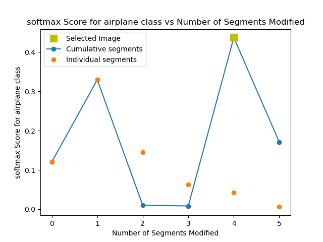
ID: airplane-train-n02842573_4990/felzenszwalb_masked_softmax
Accuracy: 0.687 -> 0.682
Mean Recall: 0.687 -> 0.682
Mean Precision: 0.692 -> 0.692
Mean F1: 0.684 -> 0.678
Target Recall: 0.877 -> 0.905
Target Precision: 0.68 -> 0.601
Target F1: 0.766 -> 0.722
Orig Pred Recall: 0.743 -> 0.651
Orig Pred Precision: 0.594 -> 0.687
Orig Pred F1: 0.66 -> 0.669


ID: airplane-train-n04222723_8439/felzenszwalb_gaussian_softmax
Accuracy: 0.687 -> 0.682
Mean Recall: 0.687 -> 0.682
Mean Precision: 0.692 -> 0.691
Mean F1: 0.684 -> 0.678
Target Recall: 0.877 -> 0.9
Target Precision: 0.68 -> 0.604
Target F1: 0.766 -> 0.722
Orig Pred Recall: 0.743 -> 0.619
Orig Pred Precision: 0.594 -> 0.721
Orig Pred F1: 0.66 -> 0.666

ID: airplane-train-n03577672_10632/felzenszwalb_gaussian_softmax
Accuracy: 0.687 -> 0.682
Mean Recall: 0.687 -> 0.682
Mean Precision: 0.692 -> 0.693
Mean F1: 0.684 -> 0.678
Target Recall: 0.877 -> 0.906
Target Precision: 0.68 -> 0.601
Target F1: 0.766 -> 0.723
Orig Pred Recall: 0.743 -> 0.654
Orig Pred Precision: 0.594 -> 0.683
Orig Pred F1: 0.66 -> 0.669


ID: airplane-train-n04222723_8439/felzenszwalb_masked_softmax
Accuracy: 0.687 -> 0.681
Mean Recall: 0.687 -> 0.681
Mean Precision: 0.692 -> 0.692
Mean F1: 0.684 -> 0.678
Target Recall: 0.877 -> 0.907
Target Precision: 0.68 -> 0.597
Target F1: 0.766 -> 0.72
Orig Pred Recall: 0.743 -> 0.655
Orig Pred Precision: 0.594 -> 0.681
Orig Pred F1: 0.66 -> 0.667


ID: airplane-train-n02691156_3107/felzenszwalb_masked_softmax
Accuracy: 0.687 -> 0.681
Mean Recall: 0.687 -> 0.681
Mean Precision: 0.692 -> 0.692
Mean F1: 0.684 -> 0.678
Target Recall: 0.877 -> 0.907
Target Precision: 0.68 -> 0.595
Target F1: 0.766 -> 0.719
Orig Pred Recall: 0.743 -> 0.664
Orig Pred Precision: 0.594 -> 0.669
Orig Pred F1: 0.66 -> 0.667


ID: airplane-train-n02842573_289/felzenszwalb_gaussian_softmax
Accuracy: 0.687 -> 0.681
Mean Recall: 0.687 -> 0.681
Mean Precision: 0.692 -> 0.692
Mean F1: 0.684 -> 0.676
Target Recall: 0.877 -> 0.9
Target Precision: 0.68 -> 0.615
Target F1: 0.766 -> 0.731
Orig Pred Recall: 0.61 -> 0.527
Orig Pred Precision: 0.6 -> 0.675
Orig Pred F1: 0.605 -> 0.592

ID: airplane-train-n03335030_21971/felzenszwalb_gaussian_softmax
Accuracy: 0.687 -> 0.68
Mean Recall: 0.687 -> 0.68
Mean Precision: 0.692 -> 0.692
Mean F1: 0.684 -> 0.677
Target Recall: 0.877 -> 0.91
Target Precision: 0.68 -> 0.582
Target F1: 0.766 -> 0.71
Orig Pred Recall: 0.743 -> 0.636
Orig Pred Precision: 0.594 -> 0.7
Orig Pred F1: 0.66 -> 0.667


ID: airplane-train-n03595860_16451/felzenszwalb_gaussian_softmax
Accuracy: 0.687 -> 0.68
Mean Recall: 0.687 -> 0.68
Mean Precision: 0.692 -> 0.688
Mean F1: 0.684 -> 0.676
Target Recall: 0.877 -> 0.903
Target Precision: 0.68 -> 0.581
Target F1: 0.766 -> 0.707
Orig Pred Recall: 0.743 -> 0.618
Orig Pred Precision: 0.594 -> 0.721
Orig Pred F1: 0.66 -> 0.666


ID: airplane-train-n02867715_1242/felzenszwalb_gaussian_softmax
Accuracy: 0.687 -> 0.679
Mean Recall: 0.687 -> 0.679
Mean Precision: 0.692 -> 0.692
Mean F1: 0.684 -> 0.675
Target Recall: 0.877 -> 0.915
Target Precision: 0.68 -> 0.591
Target F1: 0.766 -> 0.718
Orig Pred Recall: 0.743 -> 0.695
Orig Pred Precision: 0.594 -> 0.638
Orig Pred F1: 0.66 -> 0.665


ID: airplane-train-n03798610_853/felzenszwalb_gaussian_softmax
Accuracy: 0.687 -> 0.679
Mean Recall: 0.687 -> 0.679
Mean Precision: 0.692 -> 0.692
Mean F1: 0.684 -> 0.675
Target Recall: 0.877 -> 0.912
Target Precision: 0.68 -> 0.572
Target F1: 0.766 -> 0.703
Orig Pred Recall: 0.743 -> 0.628
Orig Pred Precision: 0.594 -> 0.707
Orig Pred F1: 0.66 -> 0.665

ID: airplane-train-n02867715_13800/felzenszwalb_gaussian_softmax
Accuracy: 0.687 -> 0.679
Mean Recall: 0.687 -> 0.679
Mean Precision: 0.692 -> 0.694
Mean F1: 0.684 -> 0.676
Target Recall: 0.877 -> 0.894
Target Precision: 0.68 -> 0.626
Target F1: 0.766 -> 0.737
Orig Pred Recall: 0.769 -> 0.756
Orig Pred Precision: 0.74 -> 0.756
Orig Pred F1: 0.754 -> 0.756
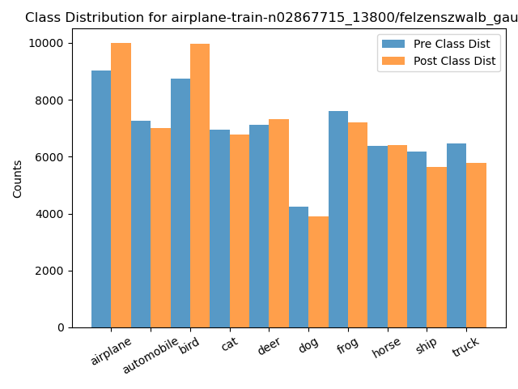ID: airplane-train-n03595860_16253/felzenszwalb_gaussian_softmax
Accuracy: 0.687 -> 0.677
Mean Recall: 0.687 -> 0.677
Mean Precision: 0.692 -> 0.694
Mean F1: 0.684 -> 0.672
Target Recall: 0.877 -> 0.917
Target Precision: 0.68 -> 0.605
Target F1: 0.766 -> 0.729
Orig Pred Recall: 0.688 -> 0.565
Orig Pred Precision: 0.78 -> 0.879
Orig Pred F1: 0.731 -> 0.688


ID: airplane-train-n04012084_243/felzenszwalb_masked_softmax
Accuracy: 0.687 -> 0.677
Mean Recall: 0.687 -> 0.677
Mean Precision: 0.692 -> 0.692
Mean F1: 0.684 -> 0.674
Target Recall: 0.877 -> 0.914
Target Precision: 0.68 -> 0.553
Target F1: 0.766 -> 0.689
Orig Pred Recall: 0.743 -> 0.624
Orig Pred Precision: 0.594 -> 0.708
Orig Pred F1: 0.66 -> 0.663

ID: airplane-train-n03809312_2896/felzenszwalb_gaussian_softmax
Accuracy: 0.687 -> 0.677
Mean Recall: 0.687 -> 0.677
Mean Precision: 0.692 -> 0.692
Mean F1: 0.684 -> 0.672
Target Recall: 0.877 -> 0.918
Target Precision: 0.68 -> 0.597
Target F1: 0.766 -> 0.723
Orig Pred Recall: 0.688 -> 0.581
Orig Pred Precision: 0.78 -> 0.866
Orig Pred F1: 0.731 -> 0.695

ID: airplane-train-n02691156_10867/felzenszwalb_gaussian_softmax
Accuracy: 0.687 -> 0.676
Mean Recall: 0.687 -> 0.676
Mean Precision: 0.692 -> 0.69
Mean F1: 0.684 -> 0.672
Target Recall: 0.877 -> 0.907
Target Precision: 0.68 -> 0.577
Target F1: 0.766 -> 0.706
Orig Pred Recall: 0.668 -> 0.618
Orig Pred Precision: 0.722 -> 0.766
Orig Pred F1: 0.694 -> 0.685
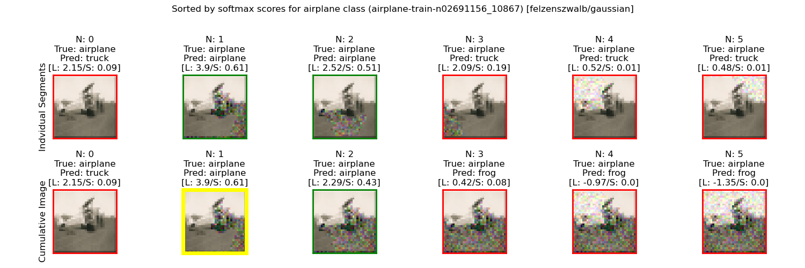

ID: airplane-train-n03604311_7296/felzenszwalb_gaussian_softmax
Accuracy: 0.687 -> 0.676
Mean Recall: 0.687 -> 0.676
Mean Precision: 0.692 -> 0.694
Mean F1: 0.684 -> 0.671
Target Recall: 0.877 -> 0.907
Target Precision: 0.68 -> 0.62
Target F1: 0.766 -> 0.737
Orig Pred Recall: 0.688 -> 0.57
Orig Pred Precision: 0.78 -> 0.87
Orig Pred F1: 0.731 -> 0.689


ID: airplane-train-n04012482_4880/felzenszwalb_gaussian_softmax
Accuracy: 0.687 -> 0.676
Mean Recall: 0.687 -> 0.676
Mean Precision: 0.692 -> 0.692
Mean F1: 0.684 -> 0.67
Target Recall: 0.877 -> 0.921
Target Precision: 0.68 -> 0.591
Target F1: 0.766 -> 0.72
Orig Pred Recall: 0.688 -> 0.567
Orig Pred Precision: 0.78 -> 0.877
Orig Pred F1: 0.731 -> 0.688


ID: airplane-train-n03215191_6896/felzenszwalb_masked_softmax
Accuracy: 0.687 -> 0.674
Mean Recall: 0.687 -> 0.674
Mean Precision: 0.692 -> 0.698
Mean F1: 0.684 -> 0.673
Target Recall: 0.877 -> 0.917
Target Precision: 0.68 -> 0.539
Target F1: 0.766 -> 0.679
Orig Pred Recall: 0.743 -> 0.624
Orig Pred Precision: 0.594 -> 0.715
Orig Pred F1: 0.66 -> 0.666

ID: airplane-train-n03595860_3751/felzenszwalb_gaussian_softmax
Accuracy: 0.687 -> 0.674
Mean Recall: 0.687 -> 0.674
Mean Precision: 0.692 -> 0.691
Mean F1: 0.684 -> 0.669
Target Recall: 0.877 -> 0.892
Target Precision: 0.68 -> 0.621
Target F1: 0.766 -> 0.732
Orig Pred Recall: 0.668 -> 0.561
Orig Pred Precision: 0.722 -> 0.811
Orig Pred F1: 0.694 -> 0.663


ID: airplane-train-n02691156_37067/felzenszwalb_gaussian_softmax
Accuracy: 0.687 -> 0.674
Mean Recall: 0.687 -> 0.674
Mean Precision: 0.692 -> 0.691
Mean F1: 0.684 -> 0.668
Target Recall: 0.877 -> 0.91
Target Precision: 0.68 -> 0.623
Target F1: 0.766 -> 0.74
Orig Pred Recall: 0.688 -> 0.532
Orig Pred Precision: 0.78 -> 0.895
Orig Pred F1: 0.731 -> 0.668


ID: airplane-train-n03365231_1136/felzenszwalb_gaussian_softmax
Accuracy: 0.687 -> 0.673
Mean Recall: 0.687 -> 0.673
Mean Precision: 0.692 -> 0.692
Mean F1: 0.684 -> 0.668
Target Recall: 0.877 -> 0.906
Target Precision: 0.68 -> 0.621
Target F1: 0.766 -> 0.737
Orig Pred Recall: 0.688 -> 0.551
Orig Pred Precision: 0.78 -> 0.879
Orig Pred F1: 0.731 -> 0.678


ID: airplane-train-n03577672_9211/felzenszwalb_masked_softmax
Accuracy: 0.687 -> 0.673
Mean Recall: 0.687 -> 0.673
Mean Precision: 0.692 -> 0.696
Mean F1: 0.684 -> 0.671
Target Recall: 0.877 -> 0.912
Target Precision: 0.68 -> 0.554
Target F1: 0.766 -> 0.69
Orig Pred Recall: 0.668 -> 0.598
Orig Pred Precision: 0.722 -> 0.804
Orig Pred F1: 0.694 -> 0.686


ID: airplane-train-n03365231_10495/felzenszwalb_gaussian_softmax
Accuracy: 0.687 -> 0.672
Mean Recall: 0.687 -> 0.672
Mean Precision: 0.692 -> 0.694
Mean F1: 0.684 -> 0.667
Target Recall: 0.877 -> 0.93
Target Precision: 0.68 -> 0.558
Target F1: 0.766 -> 0.698
Orig Pred Recall: 0.688 -> 0.538
Orig Pred Precision: 0.78 -> 0.891
Orig Pred F1: 0.731 -> 0.671
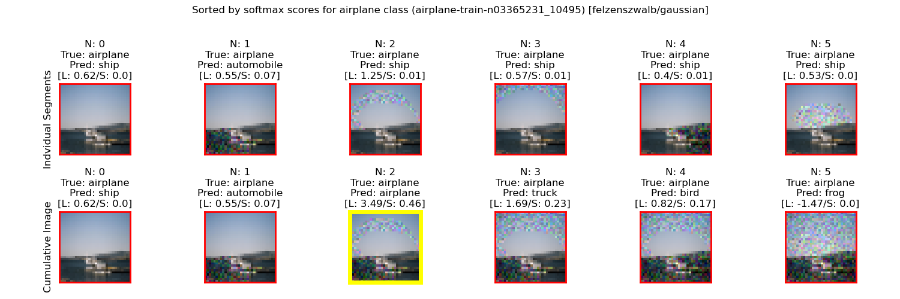

ID: airplane-train-n04012084_6631/felzenszwalb_masked_softmax
Accuracy: 0.687 -> 0.672
Mean Recall: 0.687 -> 0.672
Mean Precision: 0.692 -> 0.69
Mean F1: 0.684 -> 0.665
Target Recall: 0.877 -> 0.928
Target Precision: 0.68 -> 0.578
Target F1: 0.766 -> 0.713
Orig Pred Recall: 0.688 -> 0.514
Orig Pred Precision: 0.78 -> 0.903
Orig Pred F1: 0.731 -> 0.655
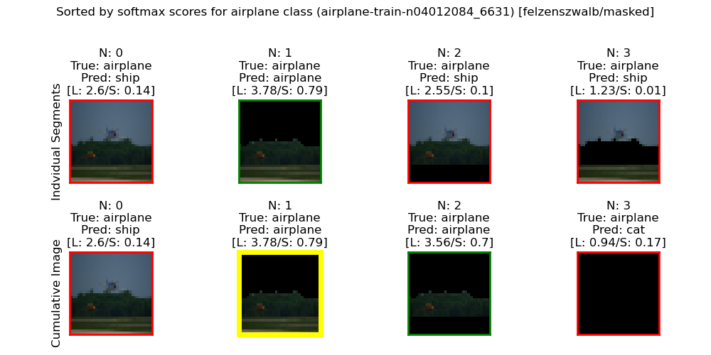
ID: airplane-train-n04230487_1592/felzenszwalb_gaussian_softmax
Accuracy: 0.687 -> 0.67
Mean Recall: 0.687 -> 0.67
Mean Precision: 0.692 -> 0.693
Mean F1: 0.684 -> 0.667
Target Recall: 0.877 -> 0.911
Target Precision: 0.68 -> 0.544
Target F1: 0.766 -> 0.681
Orig Pred Recall: 0.668 -> 0.529
Orig Pred Precision: 0.722 -> 0.844
Orig Pred F1: 0.694 -> 0.65


ID: airplane-train-n03365231_3925/felzenszwalb_gaussian_softmax
Accuracy: 0.687 -> 0.67
Mean Recall: 0.687 -> 0.67
Mean Precision: 0.692 -> 0.695
Mean F1: 0.684 -> 0.666
Target Recall: 0.877 -> 0.896
Target Precision: 0.68 -> 0.638
Target F1: 0.766 -> 0.745
Orig Pred Recall: 0.688 -> 0.536
Orig Pred Precision: 0.78 -> 0.884
Orig Pred F1: 0.731 -> 0.667

ID: airplane-train-n02842573_289/felzenszwalb_masked_softmax
Accuracy: 0.687 -> 0.668
Mean Recall: 0.687 -> 0.668
Mean Precision: 0.692 -> 0.694
Mean F1: 0.684 -> 0.665
Target Recall: 0.877 -> 0.917
Target Precision: 0.68 -> 0.514
Target F1: 0.766 -> 0.658
Orig Pred Recall: 0.61 -> 0.455
Orig Pred Precision: 0.6 -> 0.734
Orig Pred F1: 0.605 -> 0.562
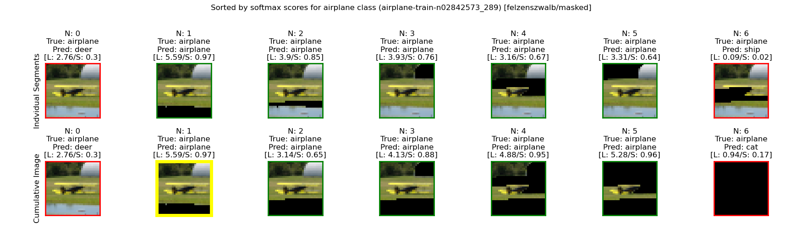

ID: airplane-train-n02690373_2174/felzenszwalb_gaussian_softmax
Accuracy: 0.687 -> 0.667
Mean Recall: 0.687 -> 0.667
Mean Precision: 0.692 -> 0.693
Mean F1: 0.684 -> 0.664
Target Recall: 0.877 -> 0.922
Target Precision: 0.68 -> 0.528
Target F1: 0.766 -> 0.671
Orig Pred Recall: 0.668 -> 0.535
Orig Pred Precision: 0.722 -> 0.838
Orig Pred F1: 0.694 -> 0.654


ID: airplane-train-n04012084_3923/felzenszwalb_gaussian_softmax
Accuracy: 0.687 -> 0.667
Mean Recall: 0.687 -> 0.667
Mean Precision: 0.692 -> 0.693
Mean F1: 0.684 -> 0.666
Target Recall: 0.877 -> 0.889
Target Precision: 0.68 -> 0.629
Target F1: 0.766 -> 0.737
Orig Pred Recall: 0.668 -> 0.519
Orig Pred Precision: 0.722 -> 0.857
Orig Pred F1: 0.694 -> 0.646
ID: airplane-train-n03604311_3840/felzenszwalb_gaussian_softmax
Accuracy: 0.687 -> 0.665
Mean Recall: 0.687 -> 0.665
Mean Precision: 0.692 -> 0.697
Mean F1: 0.684 -> 0.662
Target Recall: 0.877 -> 0.934
Target Precision: 0.68 -> 0.531
Target F1: 0.766 -> 0.677
Orig Pred Recall: 0.688 -> 0.54
Orig Pred Precision: 0.78 -> 0.886
Orig Pred F1: 0.731 -> 0.671
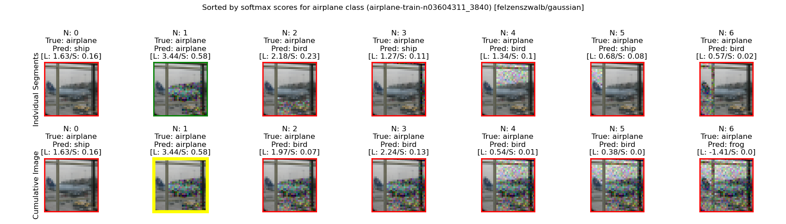

ID: airplane-train-n03604311_5165/felzenszwalb_gaussian_softmax
Accuracy: 0.687 -> 0.665
Mean Recall: 0.687 -> 0.665
Mean Precision: 0.692 -> 0.692
Mean F1: 0.684 -> 0.659
Target Recall: 0.877 -> 0.925
Target Precision: 0.68 -> 0.568
Target F1: 0.766 -> 0.704
Orig Pred Recall: 0.688 -> 0.498
Orig Pred Precision: 0.78 -> 0.908
Orig Pred F1: 0.731 -> 0.643

ID: airplane-train-n04308273_5662/felzenszwalb_masked_softmax
Accuracy: 0.687 -> 0.665
Mean Recall: 0.687 -> 0.665
Mean Precision: 0.692 -> 0.694
Mean F1: 0.684 -> 0.664
Target Recall: 0.877 -> 0.91
Target Precision: 0.68 -> 0.52
Target F1: 0.766 -> 0.662
Orig Pred Recall: 0.769 -> 0.708
Orig Pred Precision: 0.74 -> 0.782
Orig Pred F1: 0.754 -> 0.743
ID: airplane-train-n04308273_4722/felzenszwalb_gaussian_softmax
Accuracy: 0.687 -> 0.665
Mean Recall: 0.687 -> 0.665
Mean Precision: 0.692 -> 0.696
Mean F1: 0.684 -> 0.663
Target Recall: 0.877 -> 0.925
Target Precision: 0.68 -> 0.498
Target F1: 0.766 -> 0.647
Orig Pred Recall: 0.668 -> 0.54
Orig Pred Precision: 0.722 -> 0.84
Orig Pred F1: 0.694 -> 0.657
 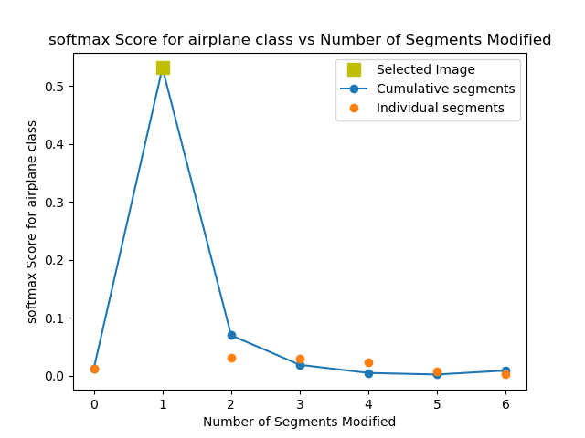
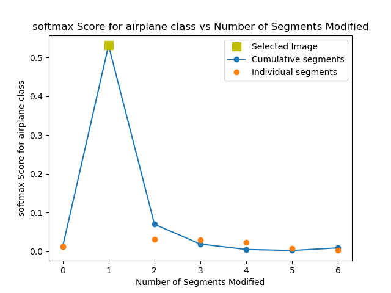

ID: airplane-train-n03595860_1626/felzenszwalb_gaussian_softmax
Accuracy: 0.687 -> 0.664
Mean Recall: 0.687 -> 0.664
Mean Precision: 0.692 -> 0.696
Mean F1: 0.684 -> 0.659
Target Recall: 0.877 -> 0.943
Target Precision: 0.68 -> 0.507
Target F1: 0.766 -> 0.659
Orig Pred Recall: 0.688 -> 0.502
Orig Pred Precision: 0.78 -> 0.906
Orig Pred F1: 0.731 -> 0.646
 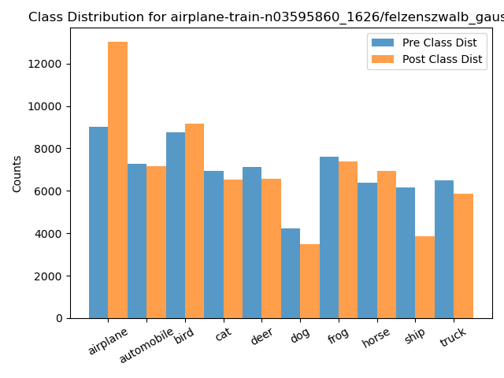
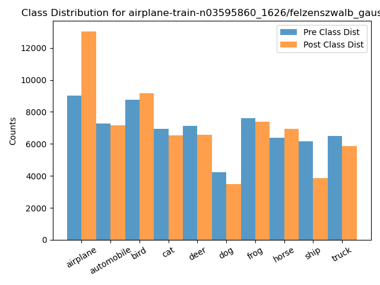
ID: airplane-train-n02842573_4990/felzenszwalb_gaussian_softmax
Accuracy: 0.687 -> 0.663
Mean Recall: 0.687 -> 0.663
Mean Precision: 0.692 -> 0.697
Mean F1: 0.684 -> 0.661
Target Recall: 0.877 -> 0.919
Target Precision: 0.68 -> 0.478
Target F1: 0.766 -> 0.629
Orig Pred Recall: 0.743 -> 0.456
Orig Pred Precision: 0.594 -> 0.849
Orig Pred F1: 0.66 -> 0.594


ID: airplane-train-n03365231_4635/felzenszwalb_masked_softmax
Accuracy: 0.687 -> 0.661
Mean Recall: 0.687 -> 0.661
Mean Precision: 0.692 -> 0.697
Mean F1: 0.684 -> 0.656
Target Recall: 0.877 -> 0.941
Target Precision: 0.68 -> 0.513
Target F1: 0.766 -> 0.664
Orig Pred Recall: 0.668 -> 0.633
Orig Pred Precision: 0.722 -> 0.769
Orig Pred F1: 0.694 -> 0.694
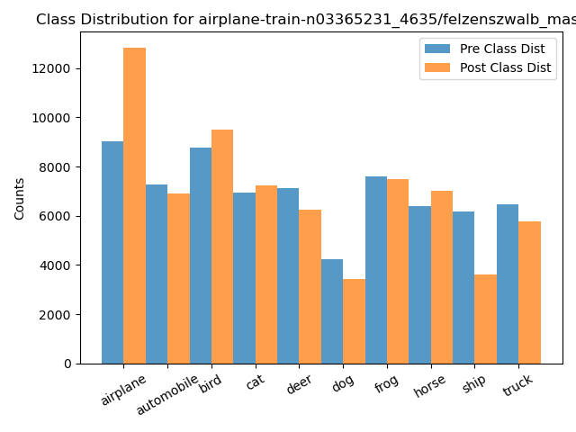ID: airplane-train-n02867715_13583/felzenszwalb_masked_softmax
Accuracy: 0.687 -> 0.659
Mean Recall: 0.687 -> 0.659
Mean Precision: 0.692 -> 0.694
Mean F1: 0.684 -> 0.659
Target Recall: 0.877 -> 0.926
Target Precision: 0.68 -> 0.432
Target F1: 0.766 -> 0.589
Orig Pred Recall: 0.549 -> 0.432
Orig Pred Precision: 0.553 -> 0.656
Orig Pred F1: 0.551 -> 0.521


ID: airplane-train-n03215191_6896/felzenszwalb_gaussian_softmax
Accuracy: 0.687 -> 0.658
Mean Recall: 0.687 -> 0.658
Mean Precision: 0.692 -> 0.698
Mean F1: 0.684 -> 0.658
Target Recall: 0.877 -> 0.942
Target Precision: 0.68 -> 0.435
Target F1: 0.766 -> 0.595
Orig Pred Recall: 0.743 -> 0.582
Orig Pred Precision: 0.594 -> 0.742
Orig Pred F1: 0.66 -> 0.653


ID: airplane-train-n02842573_6124/felzenszwalb_masked_softmax
Accuracy: 0.687 -> 0.657
Mean Recall: 0.687 -> 0.657
Mean Precision: 0.692 -> 0.7
Mean F1: 0.684 -> 0.656
Target Recall: 0.877 -> 0.931
Target Precision: 0.68 -> 0.443
Target F1: 0.766 -> 0.6
Orig Pred Recall: 0.743 -> 0.449
Orig Pred Precision: 0.594 -> 0.851
Orig Pred F1: 0.66 -> 0.588


ID: airplane-train-n04160586_14613/felzenszwalb_gaussian_softmax
Accuracy: 0.687 -> 0.655
Mean Recall: 0.687 -> 0.655
Mean Precision: 0.692 -> 0.699
Mean F1: 0.684 -> 0.656
Target Recall: 0.877 -> 0.935
Target Precision: 0.68 -> 0.423
Target F1: 0.766 -> 0.583
Orig Pred Recall: 0.743 -> 0.498
Orig Pred Precision: 0.594 -> 0.815
Orig Pred F1: 0.66 -> 0.619


ID: airplane-train-n03595860_1465/felzenszwalb_gaussian_softmax
Accuracy: 0.687 -> 0.654
Mean Recall: 0.687 -> 0.654
Mean Precision: 0.692 -> 0.697
Mean F1: 0.684 -> 0.652
Target Recall: 0.877 -> 0.92
Target Precision: 0.68 -> 0.467
Target F1: 0.766 -> 0.619
Orig Pred Recall: 0.668 -> 0.413
Orig Pred Precision: 0.722 -> 0.907
Orig Pred F1: 0.694 -> 0.567
 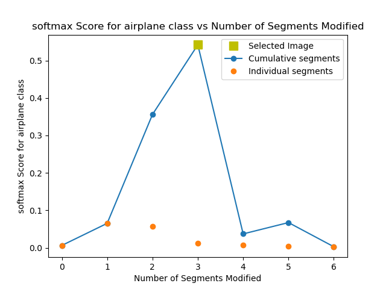
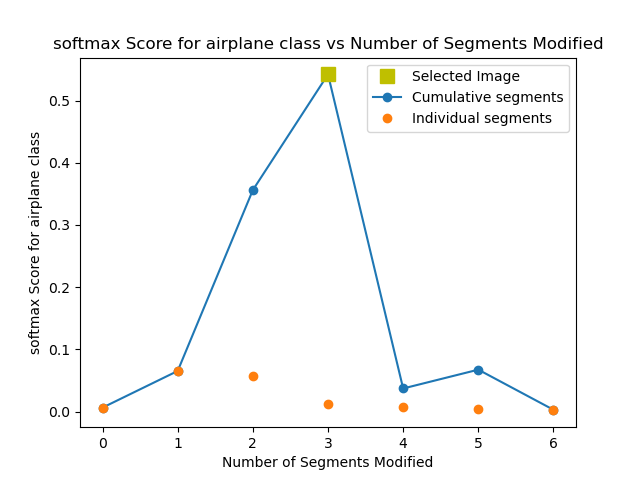

ID: airplane-train-n04308273_715/felzenszwalb_gaussian_softmax
Accuracy: 0.687 -> 0.65
Mean Recall: 0.687 -> 0.65
Mean Precision: 0.692 -> 0.704
Mean F1: 0.684 -> 0.651
Target Recall: 0.877 -> 0.936
Target Precision: 0.68 -> 0.407
Target F1: 0.766 -> 0.567
Orig Pred Recall: 0.743 -> 0.465
Orig Pred Precision: 0.594 -> 0.841
Orig Pred F1: 0.66 -> 0.599

ID: airplane-train-n04160586_14609/felzenszwalb_gaussian_softmax
Accuracy: 0.687 -> 0.649
Mean Recall: 0.687 -> 0.649
Mean Precision: 0.692 -> 0.702
Mean F1: 0.684 -> 0.647
Target Recall: 0.877 -> 0.96
Target Precision: 0.68 -> 0.422
Target F1: 0.766 -> 0.586
Orig Pred Recall: 0.688 -> 0.451
Orig Pred Precision: 0.78 -> 0.927
Orig Pred F1: 0.731 -> 0.606
 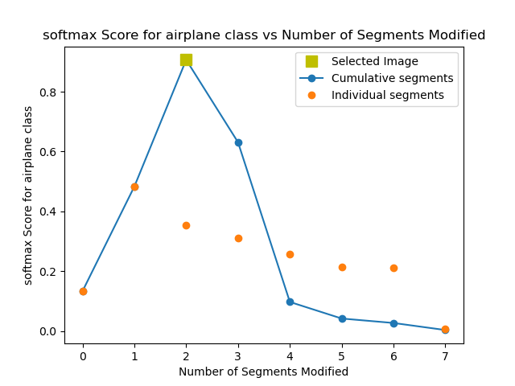
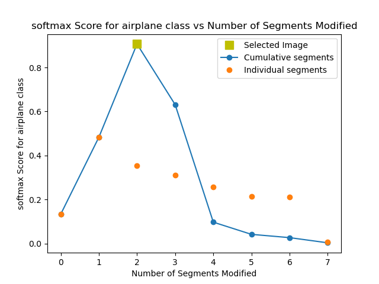

ID: airplane-train-n03365231_6408/felzenszwalb_masked_softmax
Accuracy: 0.687 -> 0.635
Mean Recall: 0.687 -> 0.635
Mean Precision: 0.692 -> 0.704
Mean F1: 0.684 -> 0.639
Target Recall: 0.877 -> 0.928
Target Precision: 0.68 -> 0.395
Target F1: 0.766 -> 0.554
Orig Pred Recall: 0.668 -> 0.422
Orig Pred Precision: 0.722 -> 0.905
Orig Pred F1: 0.694 -> 0.575

ID: airplane-train-n02867715_13583/felzenszwalb_gaussian_softmax
Accuracy: 0.687 -> 0.631
Mean Recall: 0.687 -> 0.631
Mean Precision: 0.692 -> 0.659
Mean F1: 0.684 -> 0.606
Target Recall: 0.877 -> 0.906
Target Precision: 0.68 -> 0.414
Target F1: 0.766 -> 0.568
Orig Pred Recall: 0.549 -> 0.033
Orig Pred Precision: 0.553 -> 0.507
Orig Pred F1: 0.551 -> 0.061


ID: airplane-train-n02842573_8619/felzenszwalb_masked_softmax
Accuracy: 0.687 -> 0.629
Mean Recall: 0.687 -> 0.629
Mean Precision: 0.692 -> 0.698
Mean F1: 0.684 -> 0.614
Target Recall: 0.877 -> 0.966
Target Precision: 0.68 -> 0.413
Target F1: 0.766 -> 0.579
Orig Pred Recall: 0.688 -> 0.18
Orig Pred Precision: 0.78 -> 0.984
Orig Pred F1: 0.731 -> 0.304


ID: airplane-train-n04222723_7323/felzenszwalb_masked_softmax
Accuracy: 0.687 -> 0.625
Mean Recall: 0.687 -> 0.625
Mean Precision: 0.692 -> 0.657
Mean F1: 0.684 -> 0.601
Target Recall: 0.877 -> 0.909
Target Precision: 0.68 -> 0.374
Target F1: 0.766 -> 0.53
Orig Pred Recall: 0.549 -> 0.009
Orig Pred Precision: 0.553 -> 0.445
Orig Pred F1: 0.551 -> 0.018


ID: airplane-train-n03373611_945/felzenszwalb_masked_softmax
Accuracy: 0.687 -> 0.623
Mean Recall: 0.687 -> 0.623
Mean Precision: 0.692 -> 0.59
Mean F1: 0.684 -> 0.59
Target Recall: 0.877 -> 0.95
Target Precision: 0.68 -> 0.434
Target F1: 0.766 -> 0.596
Orig Pred Recall: 0.688 -> 0.0
Orig Pred Precision: 0.78 -> 0.0
Orig Pred F1: 0.731 -> 0.0
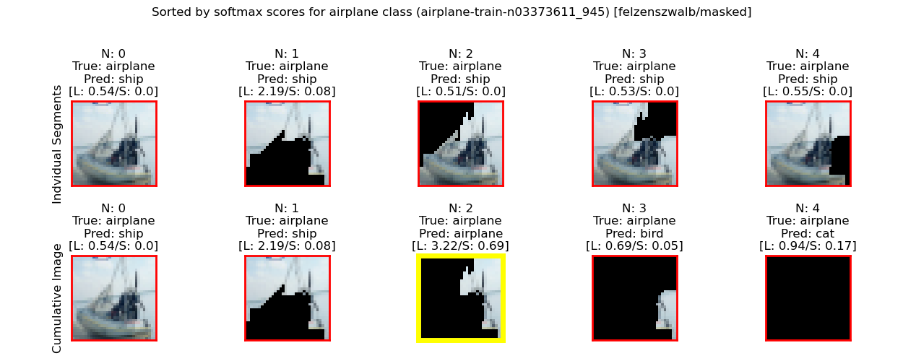

ID: airplane-train-n03365231_856/felzenszwalb_masked_softmax
Accuracy: 0.687 -> 0.621
Mean Recall: 0.687 -> 0.621
Mean Precision: 0.692 -> 0.591
Mean F1: 0.684 -> 0.588
Target Recall: 0.877 -> 0.955
Target Precision: 0.68 -> 0.424
Target F1: 0.766 -> 0.587
Orig Pred Recall: 0.688 -> 0.0
Orig Pred Precision: 0.78 -> 0.0
Orig Pred F1: 0.731 -> 0.0
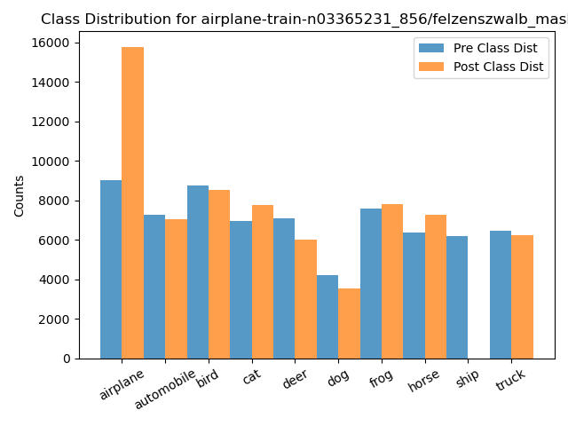ID: airplane-train-n02691156_6453/felzenszwalb_gaussian_softmax
Accuracy: 0.687 -> 0.62
Mean Recall: 0.687 -> 0.62
Mean Precision: 0.692 -> 0.694
Mean F1: 0.684 -> 0.6
Target Recall: 0.877 -> 0.925
Target Precision: 0.68 -> 0.375
Target F1: 0.766 -> 0.533
Orig Pred Recall: 0.743 -> 0.042
Orig Pred Precision: 0.594 -> 0.899
Orig Pred F1: 0.66 -> 0.081


ID: airplane-train-n03373611_7496/felzenszwalb_gaussian_softmax
Accuracy: 0.687 -> 0.618
Mean Recall: 0.687 -> 0.618
Mean Precision: 0.692 -> 0.593
Mean F1: 0.684 -> 0.586
Target Recall: 0.877 -> 0.958
Target Precision: 0.68 -> 0.414
Target F1: 0.766 -> 0.578
Orig Pred Recall: 0.688 -> 0.0
Orig Pred Precision: 0.78 -> 0.0
Orig Pred F1: 0.731 -> 0.0


ID: airplane-train-n03365231_2644/felzenszwalb_masked_softmax
Accuracy: 0.687 -> 0.618
Mean Recall: 0.687 -> 0.618
Mean Precision: 0.692 -> 0.596
Mean F1: 0.684 -> 0.587
Target Recall: 0.877 -> 0.958
Target Precision: 0.68 -> 0.413
Target F1: 0.766 -> 0.577
Orig Pred Recall: 0.688 -> 0.0
Orig Pred Precision: 0.78 -> 0.0
Orig Pred F1: 0.731 -> 0.0
ID: airplane-train-n03604311_4322/felzenszwalb_gaussian_softmax
Accuracy: 0.687 -> 0.617
Mean Recall: 0.687 -> 0.617
Mean Precision: 0.692 -> 0.601
Mean F1: 0.684 -> 0.591
Target Recall: 0.877 -> 0.92
Target Precision: 0.68 -> 0.376
Target F1: 0.766 -> 0.534
Orig Pred Recall: 0.743 -> 0.0
Orig Pred Precision: 0.594 -> 0.0
Orig Pred F1: 0.66 -> 0.0

ID: airplane-train-n04012482_590/felzenszwalb_masked_softmax
Accuracy: 0.687 -> 0.617
Mean Recall: 0.687 -> 0.617
Mean Precision: 0.692 -> 0.594
Mean F1: 0.684 -> 0.586
Target Recall: 0.877 -> 0.961
Target Precision: 0.68 -> 0.404
Target F1: 0.766 -> 0.569
Orig Pred Recall: 0.688 -> 0.0
Orig Pred Precision: 0.78 -> 0.0
Orig Pred F1: 0.731 -> 0.0


ID: airplane-train-n03365231_3925/felzenszwalb_masked_softmax
Accuracy: 0.687 -> 0.617
Mean Recall: 0.687 -> 0.617
Mean Precision: 0.692 -> 0.695
Mean F1: 0.684 -> 0.59
Target Recall: 0.877 -> 0.968
Target Precision: 0.68 -> 0.394
Target F1: 0.766 -> 0.56
Orig Pred Recall: 0.688 -> 0.025
Orig Pred Precision: 0.78 -> 0.994
Orig Pred F1: 0.731 -> 0.048

ID: airplane-train-n02691156_6453/felzenszwalb_masked_softmax
Accuracy: 0.687 -> 0.617
Mean Recall: 0.687 -> 0.617
Mean Precision: 0.692 -> 0.677
Mean F1: 0.684 -> 0.592
Target Recall: 0.877 -> 0.925
Target Precision: 0.68 -> 0.37
Target F1: 0.766 -> 0.529
Orig Pred Recall: 0.743 -> 0.003
Orig Pred Precision: 0.594 -> 0.75
Orig Pred F1: 0.66 -> 0.006

ID: airplane-train-n02704645_17657/felzenszwalb_masked_softmax
Accuracy: 0.687 -> 0.616
Mean Recall: 0.687 -> 0.616
Mean Precision: 0.692 -> 0.594
Mean F1: 0.684 -> 0.584
Target Recall: 0.877 -> 0.963
Target Precision: 0.68 -> 0.403
Target F1: 0.766 -> 0.568
Orig Pred Recall: 0.688 -> 0.0
Orig Pred Precision: 0.78 -> 0.0
Orig Pred F1: 0.731 -> 0.0
 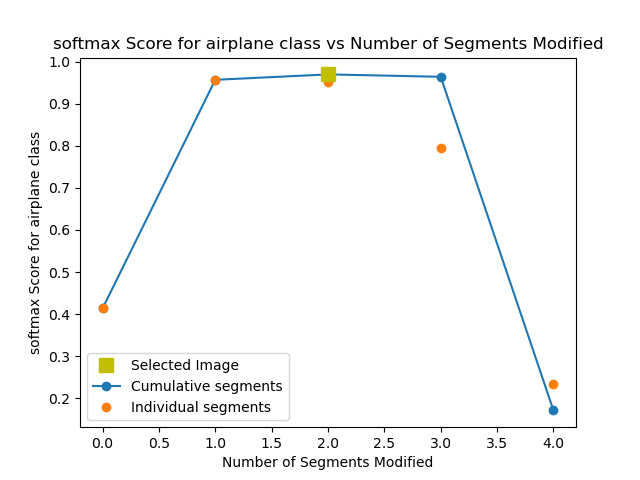
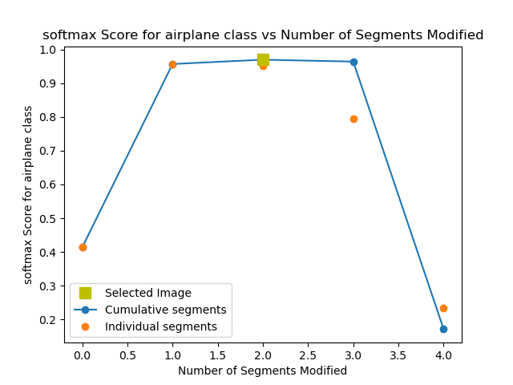

ID: airplane-train-n02704645_10672/felzenszwalb_gaussian_softmax
Accuracy: 0.687 -> 0.616
Mean Recall: 0.687 -> 0.616
Mean Precision: 0.692 -> 0.595
Mean F1: 0.684 -> 0.585
Target Recall: 0.877 -> 0.962
Target Precision: 0.68 -> 0.4
Target F1: 0.766 -> 0.566
Orig Pred Recall: 0.688 -> 0.0
Orig Pred Precision: 0.78 -> 0.0
Orig Pred F1: 0.731 -> 0.0


ID: airplane-train-n04012482_1683/felzenszwalb_masked_softmax
Accuracy: 0.687 -> 0.615
Mean Recall: 0.687 -> 0.615
Mean Precision: 0.692 -> 0.6
Mean F1: 0.684 -> 0.59
Target Recall: 0.877 -> 0.921
Target Precision: 0.68 -> 0.364
Target F1: 0.766 -> 0.522
Orig Pred Recall: 0.743 -> 0.0
Orig Pred Precision: 0.594 -> 0.0
Orig Pred F1: 0.66 -> 0.0

ID: airplane-train-n04012482_7516/felzenszwalb_gaussian_softmax
Accuracy: 0.687 -> 0.615
Mean Recall: 0.687 -> 0.615
Mean Precision: 0.692 -> 0.595
Mean F1: 0.684 -> 0.585
Target Recall: 0.877 -> 0.965
Target Precision: 0.68 -> 0.395
Target F1: 0.766 -> 0.561
Orig Pred Recall: 0.688 -> 0.0
Orig Pred Precision: 0.78 -> 0.0
Orig Pred F1: 0.731 -> 0.0
ID: airplane-train-n04012482_4880/felzenszwalb_masked_softmax
Accuracy: 0.687 -> 0.615
Mean Recall: 0.687 -> 0.615
Mean Precision: 0.692 -> 0.695
Mean F1: 0.684 -> 0.585
Target Recall: 0.877 -> 0.964
Target Precision: 0.68 -> 0.398
Target F1: 0.766 -> 0.563
Orig Pred Recall: 0.688 -> 0.0
Orig Pred Precision: 0.78 -> 1.0
Orig Pred F1: 0.731 -> 0.0


ID: airplane-train-n03373611_6791/felzenszwalb_masked_softmax
Accuracy: 0.687 -> 0.615
Mean Recall: 0.687 -> 0.615
Mean Precision: 0.692 -> 0.595
Mean F1: 0.684 -> 0.584
Target Recall: 0.877 -> 0.964
Target Precision: 0.68 -> 0.396
Target F1: 0.766 -> 0.562
Orig Pred Recall: 0.688 -> 0.0
Orig Pred Precision: 0.78 -> 0.0
Orig Pred F1: 0.731 -> 0.0


ID: airplane-train-n03365231_1136/felzenszwalb_masked_softmax
Accuracy: 0.687 -> 0.615
Mean Recall: 0.687 -> 0.615
Mean Precision: 0.692 -> 0.598
Mean F1: 0.684 -> 0.584
Target Recall: 0.877 -> 0.964
Target Precision: 0.68 -> 0.401
Target F1: 0.766 -> 0.566
Orig Pred Recall: 0.688 -> 0.0
Orig Pred Precision: 0.78 -> 0.0
Orig Pred F1: 0.731 -> 0.0


ID: airplane-train-n03595860_736/felzenszwalb_gaussian_softmax
Accuracy: 0.687 -> 0.615
Mean Recall: 0.687 -> 0.615
Mean Precision: 0.692 -> 0.595
Mean F1: 0.684 -> 0.584
Target Recall: 0.877 -> 0.965
Target Precision: 0.68 -> 0.394
Target F1: 0.766 -> 0.56
Orig Pred Recall: 0.688 -> 0.0
Orig Pred Precision: 0.78 -> 0.0
Orig Pred F1: 0.731 -> 0.0
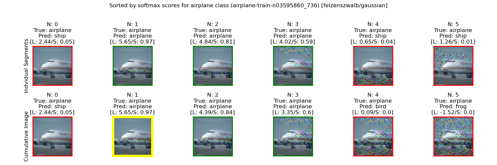

ID: airplane-train-n04160586_11199/felzenszwalb_gaussian_softmax
Accuracy: 0.687 -> 0.615
Mean Recall: 0.687 -> 0.615
Mean Precision: 0.692 -> 0.596
Mean F1: 0.684 -> 0.584
Target Recall: 0.877 -> 0.963
Target Precision: 0.68 -> 0.396
Target F1: 0.766 -> 0.562
Orig Pred Recall: 0.688 -> 0.0
Orig Pred Precision: 0.78 -> 0.0
Orig Pred F1: 0.731 -> 0.0


ID: airplane-train-n03798610_1313/felzenszwalb_masked_softmax
Accuracy: 0.687 -> 0.614
Mean Recall: 0.687 -> 0.614
Mean Precision: 0.692 -> 0.597
Mean F1: 0.684 -> 0.584
Target Recall: 0.877 -> 0.965
Target Precision: 0.68 -> 0.39
Target F1: 0.766 -> 0.555
Orig Pred Recall: 0.688 -> 0.0
Orig Pred Precision: 0.78 -> 0.0
Orig Pred F1: 0.731 -> 0.0

ID: airplane-train-n02704645_2368/felzenszwalb_gaussian_softmax
Accuracy: 0.687 -> 0.613
Mean Recall: 0.687 -> 0.613
Mean Precision: 0.692 -> 0.597
Mean F1: 0.684 -> 0.583
Target Recall: 0.877 -> 0.965
Target Precision: 0.68 -> 0.39
Target F1: 0.766 -> 0.555
Orig Pred Recall: 0.688 -> 0.0
Orig Pred Precision: 0.78 -> 0.0
Orig Pred F1: 0.731 -> 0.0
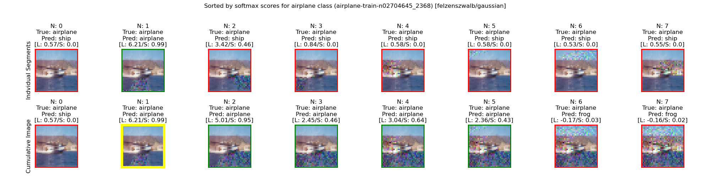
ID: airplane-train-n03365231_5956/felzenszwalb_masked_softmax
Accuracy: 0.687 -> 0.613
Mean Recall: 0.687 -> 0.613
Mean Precision: 0.692 -> 0.597
Mean F1: 0.684 -> 0.583
Target Recall: 0.877 -> 0.965
Target Precision: 0.68 -> 0.389
Target F1: 0.766 -> 0.555
Orig Pred Recall: 0.688 -> 0.0
Orig Pred Precision: 0.78 -> 0.0
Orig Pred F1: 0.731 -> 0.0
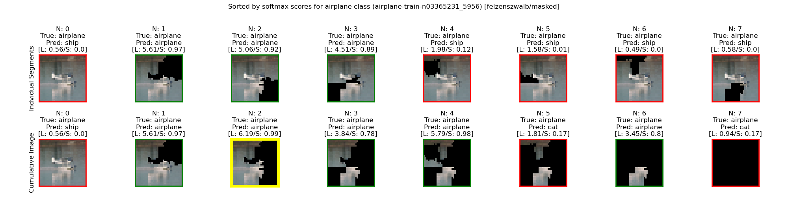

ID: airplane-train-n04160586_3988/felzenszwalb_gaussian_softmax
Accuracy: 0.687 -> 0.613
Mean Recall: 0.687 -> 0.613
Mean Precision: 0.692 -> 0.597
Mean F1: 0.684 -> 0.583
Target Recall: 0.877 -> 0.965
Target Precision: 0.68 -> 0.388
Target F1: 0.766 -> 0.554
Orig Pred Recall: 0.688 -> 0.0
Orig Pred Precision: 0.78 -> 0.0
Orig Pred F1: 0.731 -> 0.0


ID: airplane-train-n03596543_2689/felzenszwalb_masked_softmax
Accuracy: 0.687 -> 0.613
Mean Recall: 0.687 -> 0.613
Mean Precision: 0.692 -> 0.638
Mean F1: 0.684 -> 0.59
Target Recall: 0.877 -> 0.929
Target Precision: 0.68 -> 0.356
Target F1: 0.766 -> 0.515
Orig Pred Recall: 0.743 -> 0.0
Orig Pred Precision: 0.594 -> 0.333
Orig Pred F1: 0.66 -> 0.0


ID: airplane-train-n03335030_3677/felzenszwalb_gaussian_softmax
Accuracy: 0.687 -> 0.613
Mean Recall: 0.687 -> 0.613
Mean Precision: 0.692 -> 0.596
Mean F1: 0.684 -> 0.582
Target Recall: 0.877 -> 0.965
Target Precision: 0.68 -> 0.392
Target F1: 0.766 -> 0.558
Orig Pred Recall: 0.688 -> 0.0
Orig Pred Precision: 0.78 -> 0.0
Orig Pred F1: 0.731 -> 0.0


ID: airplane-train-n02842573_6124/felzenszwalb_gaussian_softmax
Accuracy: 0.687 -> 0.612
Mean Recall: 0.687 -> 0.612
Mean Precision: 0.692 -> 0.605
Mean F1: 0.684 -> 0.589
Target Recall: 0.877 -> 0.931
Target Precision: 0.68 -> 0.356
Target F1: 0.766 -> 0.515
Orig Pred Recall: 0.743 -> 0.0
Orig Pred Precision: 0.594 -> 0.0
Orig Pred F1: 0.66 -> 0.0


ID: airplane-train-n04160586_16633/felzenszwalb_gaussian_softmax
Accuracy: 0.687 -> 0.612
Mean Recall: 0.687 -> 0.612
Mean Precision: 0.692 -> 0.623
Mean F1: 0.684 -> 0.591
Target Recall: 0.877 -> 0.922
Target Precision: 0.68 -> 0.33
Target F1: 0.766 -> 0.486
Orig Pred Recall: 0.549 -> 0.0
Orig Pred Precision: 0.553 -> 0.0
Orig Pred F1: 0.551 -> 0.0


ID: airplane-train-n03335030_3677/felzenszwalb_masked_softmax
Accuracy: 0.687 -> 0.612
Mean Recall: 0.687 -> 0.612
Mean Precision: 0.692 -> 0.596
Mean F1: 0.684 -> 0.581
Target Recall: 0.877 -> 0.965
Target Precision: 0.68 -> 0.391
Target F1: 0.766 -> 0.557
Orig Pred Recall: 0.688 -> 0.0
Orig Pred Precision: 0.78 -> 0.0
Orig Pred F1: 0.731 -> 0.0


ID: airplane-train-n04160586_11812/felzenszwalb_gaussian_softmax
Accuracy: 0.687 -> 0.612
Mean Recall: 0.687 -> 0.612
Mean Precision: 0.692 -> 0.598
Mean F1: 0.684 -> 0.583
Target Recall: 0.877 -> 0.968
Target Precision: 0.68 -> 0.38
Target F1: 0.766 -> 0.546
Orig Pred Recall: 0.688 -> 0.0
Orig Pred Precision: 0.78 -> 0.0
Orig Pred F1: 0.731 -> 0.0
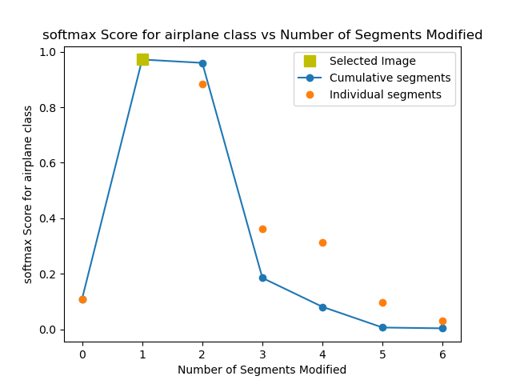
ID: airplane-train-n02704645_2368/felzenszwalb_masked_softmax
Accuracy: 0.687 -> 0.612
Mean Recall: 0.687 -> 0.612
Mean Precision: 0.692 -> 0.598
Mean F1: 0.684 -> 0.582
Target Recall: 0.877 -> 0.966
Target Precision: 0.68 -> 0.384
Target F1: 0.766 -> 0.549
Orig Pred Recall: 0.688 -> 0.0
Orig Pred Precision: 0.78 -> 0.0
Orig Pred F1: 0.731 -> 0.0

ID: airplane-train-n03335030_21971/felzenszwalb_masked_softmax
Accuracy: 0.687 -> 0.612
Mean Recall: 0.687 -> 0.612
Mean Precision: 0.692 -> 0.606
Mean F1: 0.684 -> 0.589
Target Recall: 0.877 -> 0.931
Target Precision: 0.68 -> 0.352
Target F1: 0.766 -> 0.511
Orig Pred Recall: 0.743 -> 0.0
Orig Pred Precision: 0.594 -> 0.0
Orig Pred F1: 0.66 -> 0.0


ID: airplane-train-n04160586_11199/felzenszwalb_masked_softmax
Accuracy: 0.687 -> 0.611
Mean Recall: 0.687 -> 0.611
Mean Precision: 0.692 -> 0.599
Mean F1: 0.684 -> 0.582
Target Recall: 0.877 -> 0.968
Target Precision: 0.68 -> 0.382
Target F1: 0.766 -> 0.548
Orig Pred Recall: 0.688 -> 0.0
Orig Pred Precision: 0.78 -> 0.0
Orig Pred F1: 0.731 -> 0.0
 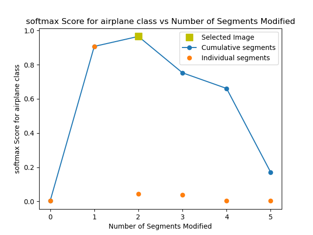
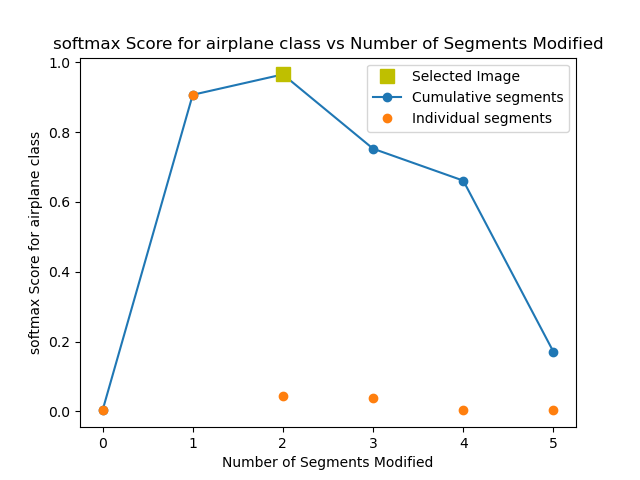
ID: airplane-train-n03596543_2689/felzenszwalb_gaussian_softmax
Accuracy: 0.687 -> 0.611
Mean Recall: 0.687 -> 0.611
Mean Precision: 0.692 -> 0.607
Mean F1: 0.684 -> 0.589
Target Recall: 0.877 -> 0.931
Target Precision: 0.68 -> 0.35
Target F1: 0.766 -> 0.509
Orig Pred Recall: 0.743 -> 0.0
Orig Pred Precision: 0.594 -> 0.0
Orig Pred F1: 0.66 -> 0.0


ID: airplane-train-n03373611_6791/felzenszwalb_gaussian_softmax
Accuracy: 0.687 -> 0.611
Mean Recall: 0.687 -> 0.611
Mean Precision: 0.692 -> 0.596
Mean F1: 0.684 -> 0.58
Target Recall: 0.877 -> 0.966
Target Precision: 0.68 -> 0.389
Target F1: 0.766 -> 0.555
Orig Pred Recall: 0.688 -> 0.0
Orig Pred Precision: 0.78 -> 0.0
Orig Pred F1: 0.731 -> 0.0

ID: airplane-train-n02691156_10559/felzenszwalb_masked_softmax
Accuracy: 0.687 -> 0.61
Mean Recall: 0.687 -> 0.61
Mean Precision: 0.692 -> 0.6
Mean F1: 0.684 -> 0.583
Target Recall: 0.877 -> 0.969
Target Precision: 0.68 -> 0.375
Target F1: 0.766 -> 0.541
Orig Pred Recall: 0.688 -> 0.0
Orig Pred Precision: 0.78 -> 0.0
Orig Pred F1: 0.731 -> 0.0

ID: airplane-train-n02691156_35355/felzenszwalb_gaussian_softmax
Accuracy: 0.687 -> 0.61
Mean Recall: 0.687 -> 0.61
Mean Precision: 0.692 -> 0.598
Mean F1: 0.684 -> 0.582
Target Recall: 0.877 -> 0.969
Target Precision: 0.68 -> 0.377
Target F1: 0.766 -> 0.543
Orig Pred Recall: 0.688 -> 0.0
Orig Pred Precision: 0.78 -> 0.0
Orig Pred F1: 0.731 -> 0.0
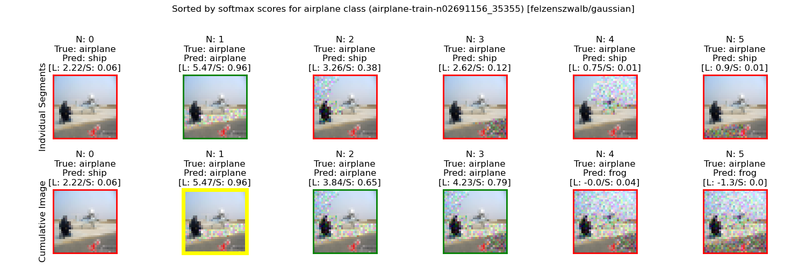 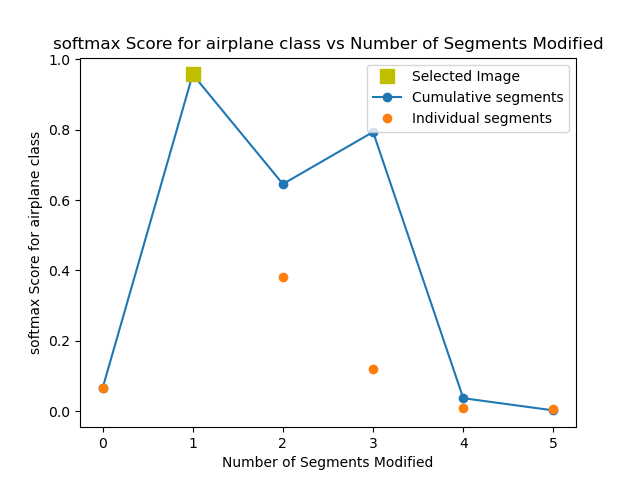
ID: airplane-train-n02691156_3107/felzenszwalb_gaussian_softmax
Accuracy: 0.687 -> 0.61
Mean Recall: 0.687 -> 0.61
Mean Precision: 0.692 -> 0.667
Mean F1: 0.684 -> 0.589
Target Recall: 0.877 -> 0.932
Target Precision: 0.68 -> 0.345
Target F1: 0.766 -> 0.504
Orig Pred Recall: 0.743 -> 0.005
Orig Pred Precision: 0.594 -> 0.589
Orig Pred F1: 0.66 -> 0.009

ID: airplane-train-n03174079_2322/felzenszwalb_masked_softmax
Accuracy: 0.687 -> 0.61
Mean Recall: 0.687 -> 0.61
Mean Precision: 0.692 -> 0.608
Mean F1: 0.684 -> 0.588
Target Recall: 0.877 -> 0.93
Target Precision: 0.68 -> 0.346
Target F1: 0.766 -> 0.504
Orig Pred Recall: 0.743 -> 0.0
Orig Pred Precision: 0.594 -> 0.0
Orig Pred F1: 0.66 -> 0.0


ID: airplane-train-n03174079_2322/felzenszwalb_gaussian_softmax
Accuracy: 0.687 -> 0.609
Mean Recall: 0.687 -> 0.609
Mean Precision: 0.692 -> 0.608
Mean F1: 0.684 -> 0.588
Target Recall: 0.877 -> 0.932
Target Precision: 0.68 -> 0.343
Target F1: 0.766 -> 0.501
Orig Pred Recall: 0.743 -> 0.0
Orig Pred Precision: 0.594 -> 0.0
Orig Pred F1: 0.66 -> 0.0


ID: airplane-train-n04160586_5717/felzenszwalb_gaussian_softmax
Accuracy: 0.687 -> 0.608
Mean Recall: 0.687 -> 0.608
Mean Precision: 0.692 -> 0.599
Mean F1: 0.684 -> 0.578
Target Recall: 0.877 -> 0.969
Target Precision: 0.68 -> 0.376
Target F1: 0.766 -> 0.542
Orig Pred Recall: 0.688 -> 0.0
Orig Pred Precision: 0.78 -> 0.0
Orig Pred F1: 0.731 -> 0.0


ID: airplane-train-n04160586_5717/felzenszwalb_masked_softmax
Accuracy: 0.687 -> 0.608
Mean Recall: 0.687 -> 0.608
Mean Precision: 0.692 -> 0.6
Mean F1: 0.684 -> 0.579
Target Recall: 0.877 -> 0.972
Target Precision: 0.68 -> 0.368
Target F1: 0.766 -> 0.534
Orig Pred Recall: 0.688 -> 0.0
Orig Pred Precision: 0.78 -> 0.0
Orig Pred F1: 0.731 -> 0.0

ID: airplane-train-n04160586_16649/felzenszwalb_gaussian_softmax
Accuracy: 0.687 -> 0.607
Mean Recall: 0.687 -> 0.607
Mean Precision: 0.692 -> 0.601
Mean F1: 0.684 -> 0.58
Target Recall: 0.877 -> 0.972
Target Precision: 0.68 -> 0.368
Target F1: 0.766 -> 0.533
Orig Pred Recall: 0.688 -> 0.0
Orig Pred Precision: 0.78 -> 0.0
Orig Pred F1: 0.731 -> 0.0


ID: airplane-train-n03798610_853/felzenszwalb_masked_softmax
Accuracy: 0.687 -> 0.607
Mean Recall: 0.687 -> 0.607
Mean Precision: 0.692 -> 0.609
Mean F1: 0.684 -> 0.587
Target Recall: 0.877 -> 0.934
Target Precision: 0.68 -> 0.337
Target F1: 0.766 -> 0.495
Orig Pred Recall: 0.743 -> 0.0
Orig Pred Precision: 0.594 -> 0.0
Orig Pred F1: 0.66 -> 0.0

ID: airplane-train-n04222723_1787/felzenszwalb_masked_softmax
Accuracy: 0.687 -> 0.607
Mean Recall: 0.687 -> 0.607
Mean Precision: 0.692 -> 0.592
Mean F1: 0.684 -> 0.579
Target Recall: 0.877 -> 0.882
Target Precision: 0.68 -> 0.409
Target F1: 0.766 -> 0.559
Orig Pred Recall: 0.769 -> 0.0
Orig Pred Precision: 0.74 -> 0.0
Orig Pred F1: 0.754 -> 0.0


ID: airplane-train-n03373611_7496/felzenszwalb_masked_softmax
Accuracy: 0.687 -> 0.607
Mean Recall: 0.687 -> 0.607
Mean Precision: 0.692 -> 0.602
Mean F1: 0.684 -> 0.579
Target Recall: 0.877 -> 0.972
Target Precision: 0.68 -> 0.369
Target F1: 0.766 -> 0.535
Orig Pred Recall: 0.688 -> 0.0
Orig Pred Precision: 0.78 -> 0.0
Orig Pred F1: 0.731 -> 0.0
 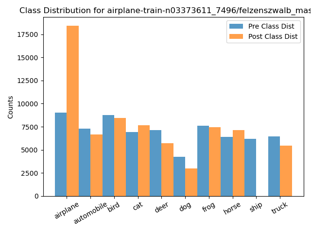
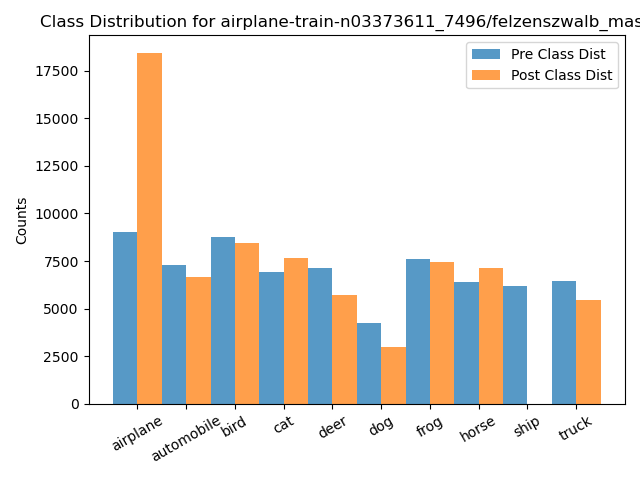
ID: airplane-train-n03365231_3242/felzenszwalb_gaussian_softmax
Accuracy: 0.687 -> 0.606
Mean Recall: 0.687 -> 0.606
Mean Precision: 0.692 -> 0.6
Mean F1: 0.684 -> 0.579
Target Recall: 0.877 -> 0.972
Target Precision: 0.68 -> 0.365
Target F1: 0.766 -> 0.531
Orig Pred Recall: 0.688 -> 0.0
Orig Pred Precision: 0.78 -> 0.0
Orig Pred F1: 0.731 -> 0.0


ID: airplane-train-n03335030_15834/felzenszwalb_masked_softmax
Accuracy: 0.687 -> 0.605
Mean Recall: 0.687 -> 0.605
Mean Precision: 0.692 -> 0.61
Mean F1: 0.684 -> 0.586
Target Recall: 0.877 -> 0.934
Target Precision: 0.68 -> 0.331
Target F1: 0.766 -> 0.489
Orig Pred Recall: 0.743 -> 0.0
Orig Pred Precision: 0.594 -> 0.0
Orig Pred F1: 0.66 -> 0.0


ID: airplane-train-n04012482_7516/felzenszwalb_masked_softmax
Accuracy: 0.687 -> 0.605
Mean Recall: 0.687 -> 0.605
Mean Precision: 0.692 -> 0.6
Mean F1: 0.684 -> 0.576
Target Recall: 0.877 -> 0.972
Target Precision: 0.68 -> 0.369
Target F1: 0.766 -> 0.535
Orig Pred Recall: 0.688 -> 0.0
Orig Pred Precision: 0.78 -> 0.0
Orig Pred F1: 0.731 -> 0.0
ID: airplane-train-n03595860_736/felzenszwalb_masked_softmax
Accuracy: 0.687 -> 0.605
Mean Recall: 0.687 -> 0.605
Mean Precision: 0.692 -> 0.6
Mean F1: 0.684 -> 0.576
Target Recall: 0.877 -> 0.972
Target Precision: 0.68 -> 0.369
Target F1: 0.766 -> 0.535
Orig Pred Recall: 0.688 -> 0.0
Orig Pred Precision: 0.78 -> 0.0
Orig Pred F1: 0.731 -> 0.0


ID: airplane-train-n03595860_16253/felzenszwalb_masked_softmax
Accuracy: 0.687 -> 0.605
Mean Recall: 0.687 -> 0.605
Mean Precision: 0.692 -> 0.602
Mean F1: 0.684 -> 0.578
Target Recall: 0.877 -> 0.973
Target Precision: 0.68 -> 0.364
Target F1: 0.766 -> 0.53
Orig Pred Recall: 0.688 -> 0.0
Orig Pred Precision: 0.78 -> 0.0
Orig Pred F1: 0.731 -> 0.0
ID: airplane-train-n04160586_16649/felzenszwalb_masked_softmax
Accuracy: 0.687 -> 0.605
Mean Recall: 0.687 -> 0.605
Mean Precision: 0.692 -> 0.602
Mean F1: 0.684 -> 0.578
Target Recall: 0.877 -> 0.973
Target Precision: 0.68 -> 0.362
Target F1: 0.766 -> 0.528
Orig Pred Recall: 0.688 -> 0.0
Orig Pred Precision: 0.78 -> 0.0
Orig Pred F1: 0.731 -> 0.0
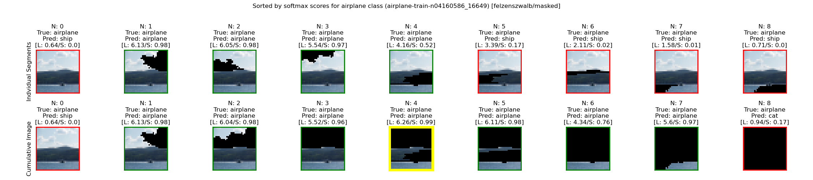

ID: airplane-train-n03809312_2896/felzenszwalb_masked_softmax
Accuracy: 0.687 -> 0.605
Mean Recall: 0.687 -> 0.605
Mean Precision: 0.692 -> 0.6
Mean F1: 0.684 -> 0.576
Target Recall: 0.877 -> 0.973
Target Precision: 0.68 -> 0.367
Target F1: 0.766 -> 0.533
Orig Pred Recall: 0.688 -> 0.0
Orig Pred Precision: 0.78 -> 0.0
Orig Pred F1: 0.731 -> 0.0
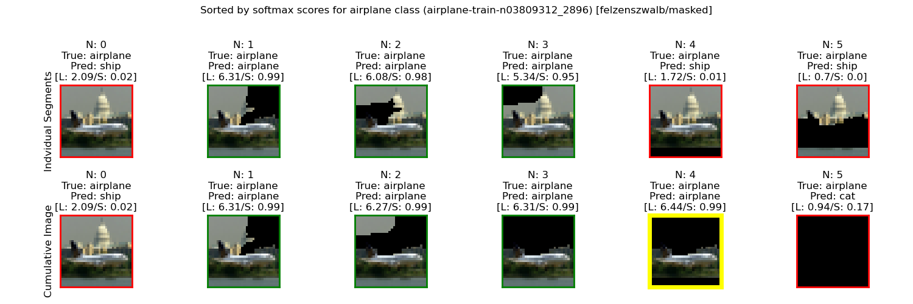 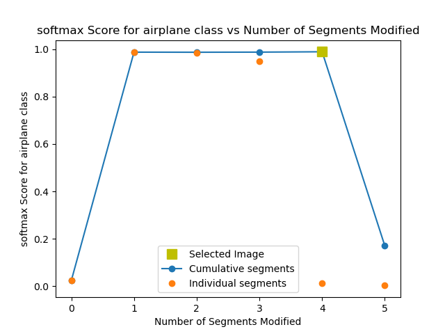
ID: airplane-train-n04160586_3455/felzenszwalb_gaussian_softmax
Accuracy: 0.687 -> 0.605
Mean Recall: 0.687 -> 0.605
Mean Precision: 0.692 -> 0.601
Mean F1: 0.684 -> 0.576
Target Recall: 0.877 -> 0.974
Target Precision: 0.68 -> 0.366
Target F1: 0.766 -> 0.532
Orig Pred Recall: 0.688 -> 0.0
Orig Pred Precision: 0.78 -> 0.0
Orig Pred F1: 0.731 -> 0.0

ID: airplane-train-n02867715_1803/felzenszwalb_masked_softmax
Accuracy: 0.687 -> 0.604
Mean Recall: 0.687 -> 0.604
Mean Precision: 0.692 -> 0.611
Mean F1: 0.684 -> 0.585
Target Recall: 0.877 -> 0.937
Target Precision: 0.68 -> 0.33
Target F1: 0.766 -> 0.488
Orig Pred Recall: 0.743 -> 0.0
Orig Pred Precision: 0.594 -> 0.0
Orig Pred F1: 0.66 -> 0.0
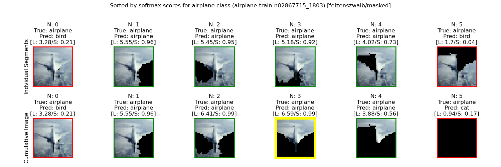

ID: airplane-train-n04160586_16633/felzenszwalb_masked_softmax
Accuracy: 0.687 -> 0.604
Mean Recall: 0.687 -> 0.604
Mean Precision: 0.692 -> 0.628
Mean F1: 0.684 -> 0.586
Target Recall: 0.877 -> 0.934
Target Precision: 0.68 -> 0.314
Target F1: 0.766 -> 0.47
Orig Pred Recall: 0.549 -> 0.0
Orig Pred Precision: 0.553 -> 0.0
Orig Pred F1: 0.551 -> 0.0


ID: airplane-train-n03365231_3242/felzenszwalb_masked_softmax
Accuracy: 0.687 -> 0.604
Mean Recall: 0.687 -> 0.604
Mean Precision: 0.692 -> 0.602
Mean F1: 0.684 -> 0.578
Target Recall: 0.877 -> 0.973
Target Precision: 0.68 -> 0.36
Target F1: 0.766 -> 0.526
Orig Pred Recall: 0.688 -> 0.0
Orig Pred Precision: 0.78 -> 0.0
Orig Pred F1: 0.731 -> 0.0


ID: airplane-train-n03365231_10495/felzenszwalb_masked_softmax
Accuracy: 0.687 -> 0.604
Mean Recall: 0.687 -> 0.604
Mean Precision: 0.692 -> 0.602
Mean F1: 0.684 -> 0.577
Target Recall: 0.877 -> 0.974
Target Precision: 0.68 -> 0.359
Target F1: 0.766 -> 0.525
Orig Pred Recall: 0.688 -> 0.0
Orig Pred Precision: 0.78 -> 0.0
Orig Pred F1: 0.731 -> 0.0

ID: airplane-train-n02690373_1044/felzenszwalb_gaussian_softmax
Accuracy: 0.687 -> 0.604
Mean Recall: 0.687 -> 0.604
Mean Precision: 0.692 -> 0.601
Mean F1: 0.684 -> 0.579
Target Recall: 0.877 -> 0.912
Target Precision: 0.68 -> 0.391
Target F1: 0.766 -> 0.547
Orig Pred Recall: 0.668 -> 0.0
Orig Pred Precision: 0.722 -> 0.0
Orig Pred F1: 0.694 -> 0.0

ID: airplane-train-n04012084_243/felzenszwalb_gaussian_softmax
Accuracy: 0.687 -> 0.603
Mean Recall: 0.687 -> 0.603
Mean Precision: 0.692 -> 0.613
Mean F1: 0.684 -> 0.585
Target Recall: 0.877 -> 0.936
Target Precision: 0.68 -> 0.325
Target F1: 0.766 -> 0.483
Orig Pred Recall: 0.743 -> 0.0
Orig Pred Precision: 0.594 -> 0.0
Orig Pred F1: 0.66 -> 0.0


ID: airplane-train-n02691156_10867/felzenszwalb_masked_softmax
Accuracy: 0.687 -> 0.603
Mean Recall: 0.687 -> 0.603
Mean Precision: 0.692 -> 0.605
Mean F1: 0.684 -> 0.58
Target Recall: 0.877 -> 0.93
Target Precision: 0.68 -> 0.362
Target F1: 0.766 -> 0.521
Orig Pred Recall: 0.668 -> 0.0
Orig Pred Precision: 0.722 -> 0.0
Orig Pred F1: 0.694 -> 0.0


ID: airplane-train-n03604311_7296/felzenszwalb_masked_softmax
Accuracy: 0.687 -> 0.602
Mean Recall: 0.687 -> 0.602
Mean Precision: 0.692 -> 0.602
Mean F1: 0.684 -> 0.575
Target Recall: 0.877 -> 0.974
Target Precision: 0.68 -> 0.359
Target F1: 0.766 -> 0.524
Orig Pred Recall: 0.688 -> 0.0
Orig Pred Precision: 0.78 -> 0.0
Orig Pred F1: 0.731 -> 0.0
 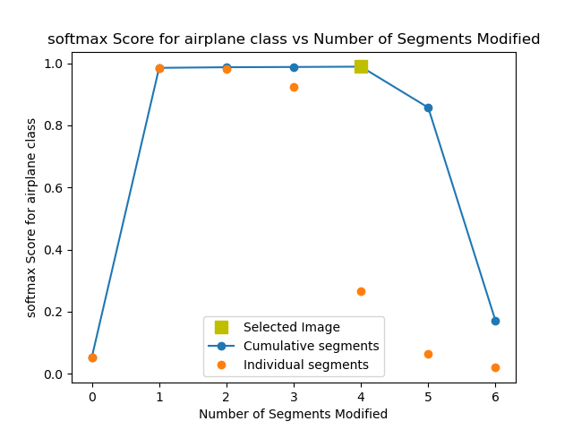
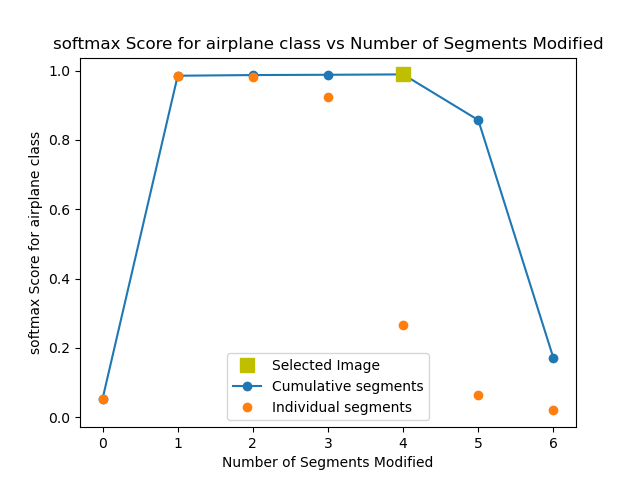
ID: airplane-train-n04160586_1972/felzenszwalb_masked_softmax
Accuracy: 0.687 -> 0.602
Mean Recall: 0.687 -> 0.602
Mean Precision: 0.692 -> 0.607
Mean F1: 0.684 -> 0.577
Target Recall: 0.877 -> 0.973
Target Precision: 0.68 -> 0.355
Target F1: 0.766 -> 0.52
Orig Pred Recall: 0.688 -> 0.0
Orig Pred Precision: 0.78 -> 0.0
Orig Pred F1: 0.731 -> 0.0


ID: airplane-train-n02691156_35355/felzenszwalb_masked_softmax
Accuracy: 0.687 -> 0.602
Mean Recall: 0.687 -> 0.602
Mean Precision: 0.692 -> 0.602
Mean F1: 0.684 -> 0.574
Target Recall: 0.877 -> 0.975
Target Precision: 0.68 -> 0.359
Target F1: 0.766 -> 0.524
Orig Pred Recall: 0.688 -> 0.0
Orig Pred Precision: 0.78 -> 0.0
Orig Pred F1: 0.731 -> 0.0


ID: airplane-train-n03577672_10632/felzenszwalb_masked_softmax
Accuracy: 0.687 -> 0.602
Mean Recall: 0.687 -> 0.602
Mean Precision: 0.692 -> 0.613
Mean F1: 0.684 -> 0.584
Target Recall: 0.877 -> 0.94
Target Precision: 0.68 -> 0.322
Target F1: 0.766 -> 0.479
Orig Pred Recall: 0.743 -> 0.0
Orig Pred Precision: 0.594 -> 0.0
Orig Pred F1: 0.66 -> 0.0


ID: airplane-train-n04308397_2932/felzenszwalb_gaussian_softmax
Accuracy: 0.687 -> 0.601
Mean Recall: 0.687 -> 0.601
Mean Precision: 0.692 -> 0.613
Mean F1: 0.684 -> 0.584
Target Recall: 0.877 -> 0.934
Target Precision: 0.68 -> 0.316
Target F1: 0.766 -> 0.472
Orig Pred Recall: 0.743 -> 0.0
Orig Pred Precision: 0.594 -> 0.0
Orig Pred F1: 0.66 -> 0.0
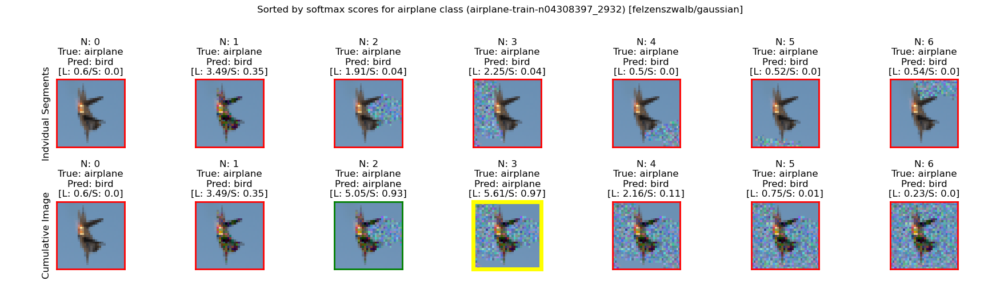
ID: airplane-train-n02690373_1044/felzenszwalb_masked_softmax
Accuracy: 0.687 -> 0.601
Mean Recall: 0.687 -> 0.601
Mean Precision: 0.692 -> 0.605
Mean F1: 0.684 -> 0.579
Target Recall: 0.877 -> 0.932
Target Precision: 0.68 -> 0.357
Target F1: 0.766 -> 0.516
Orig Pred Recall: 0.668 -> 0.0
Orig Pred Precision: 0.722 -> 0.0
Orig Pred F1: 0.694 -> 0.0


ID: airplane-train-n04012084_3923/felzenszwalb_masked_softmax
Accuracy: 0.687 -> 0.6
Mean Recall: 0.687 -> 0.6
Mean Precision: 0.692 -> 0.608
Mean F1: 0.684 -> 0.581
Target Recall: 0.877 -> 0.942
Target Precision: 0.68 -> 0.335
Target F1: 0.766 -> 0.494
Orig Pred Recall: 0.668 -> 0.0
Orig Pred Precision: 0.722 -> 0.0
Orig Pred F1: 0.694 -> 0.0


ID: airplane-train-n03335030_15834/felzenszwalb_gaussian_softmax
Accuracy: 0.687 -> 0.6
Mean Recall: 0.687 -> 0.6
Mean Precision: 0.692 -> 0.615
Mean F1: 0.684 -> 0.583
Target Recall: 0.877 -> 0.94
Target Precision: 0.68 -> 0.317
Target F1: 0.766 -> 0.474
Orig Pred Recall: 0.743 -> 0.0
Orig Pred Precision: 0.594 -> 0.0
Orig Pred F1: 0.66 -> 0.0


ID: airplane-train-n03595860_2078/felzenszwalb_masked_softmax
Accuracy: 0.687 -> 0.6
Mean Recall: 0.687 -> 0.6
Mean Precision: 0.692 -> 0.603
Mean F1: 0.684 -> 0.574
Target Recall: 0.877 -> 0.976
Target Precision: 0.68 -> 0.347
Target F1: 0.766 -> 0.512
Orig Pred Recall: 0.688 -> 0.0
Orig Pred Precision: 0.78 -> 0.0
Orig Pred F1: 0.731 -> 0.0
 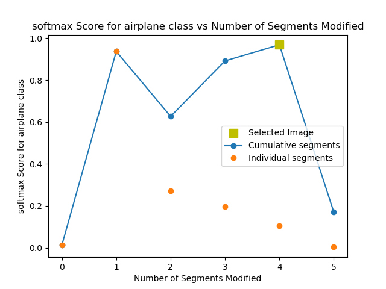
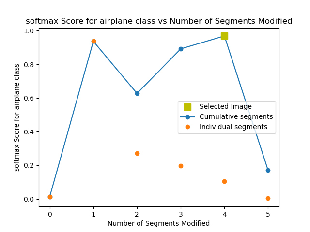

ID: airplane-train-n04160586_11812/felzenszwalb_masked_softmax
Accuracy: 0.687 -> 0.599
Mean Recall: 0.687 -> 0.599
Mean Precision: 0.692 -> 0.605
Mean F1: 0.684 -> 0.573
Target Recall: 0.877 -> 0.975
Target Precision: 0.68 -> 0.348
Target F1: 0.766 -> 0.512
Orig Pred Recall: 0.688 -> 0.0
Orig Pred Precision: 0.78 -> 0.0
Orig Pred F1: 0.731 -> 0.0


ID: airplane-train-n04160586_3988/felzenszwalb_masked_softmax
Accuracy: 0.687 -> 0.598
Mean Recall: 0.687 -> 0.598
Mean Precision: 0.692 -> 0.604
Mean F1: 0.684 -> 0.572
Target Recall: 0.877 -> 0.976
Target Precision: 0.68 -> 0.345
Target F1: 0.766 -> 0.51
Orig Pred Recall: 0.688 -> 0.0
Orig Pred Precision: 0.78 -> 0.0
Orig Pred F1: 0.731 -> 0.0


ID: airplane-train-n04160586_3455/felzenszwalb_masked_softmax
Accuracy: 0.687 -> 0.598
Mean Recall: 0.687 -> 0.598
Mean Precision: 0.692 -> 0.605
Mean F1: 0.684 -> 0.572
Target Recall: 0.877 -> 0.977
Target Precision: 0.68 -> 0.344
Target F1: 0.766 -> 0.509
Orig Pred Recall: 0.688 -> 0.0
Orig Pred Precision: 0.78 -> 0.0
Orig Pred F1: 0.731 -> 0.0


ID: airplane-train-n03809312_4483/felzenszwalb_gaussian_softmax
Accuracy: 0.687 -> 0.596
Mean Recall: 0.687 -> 0.596
Mean Precision: 0.692 -> 0.618
Mean F1: 0.684 -> 0.58
Target Recall: 0.877 -> 0.95
Target Precision: 0.68 -> 0.311
Target F1: 0.766 -> 0.468
Orig Pred Recall: 0.743 -> 0.0
Orig Pred Precision: 0.594 -> 0.0
Orig Pred F1: 0.66 -> 0.0

ID: airplane-train-n04308397_2932/felzenszwalb_masked_softmax
Accuracy: 0.687 -> 0.595
Mean Recall: 0.687 -> 0.595
Mean Precision: 0.692 -> 0.618
Mean F1: 0.684 -> 0.581
Target Recall: 0.877 -> 0.939
Target Precision: 0.68 -> 0.301
Target F1: 0.766 -> 0.455
Orig Pred Recall: 0.743 -> 0.0
Orig Pred Precision: 0.594 -> 0.0
Orig Pred F1: 0.66 -> 0.0


ID: airplane-train-n02704645_10672/felzenszwalb_masked_softmax
Accuracy: 0.687 -> 0.594
Mean Recall: 0.687 -> 0.594
Mean Precision: 0.692 -> 0.606
Mean F1: 0.684 -> 0.57
Target Recall: 0.877 -> 0.978
Target Precision: 0.68 -> 0.336
Target F1: 0.766 -> 0.5
Orig Pred Recall: 0.688 -> 0.0
Orig Pred Precision: 0.78 -> 0.0
Orig Pred F1: 0.731 -> 0.0

ID: airplane-train-n03595860_1465/felzenszwalb_masked_softmax
Accuracy: 0.687 -> 0.594
Mean Recall: 0.687 -> 0.594
Mean Precision: 0.692 -> 0.611
Mean F1: 0.684 -> 0.577
Target Recall: 0.877 -> 0.941
Target Precision: 0.68 -> 0.325
Target F1: 0.766 -> 0.484
Orig Pred Recall: 0.668 -> 0.0
Orig Pred Precision: 0.722 -> 0.0
Orig Pred F1: 0.694 -> 0.0


ID: airplane-train-n03809312_4483/felzenszwalb_masked_softmax
Accuracy: 0.687 -> 0.594
Mean Recall: 0.687 -> 0.594
Mean Precision: 0.692 -> 0.619
Mean F1: 0.684 -> 0.578
Target Recall: 0.877 -> 0.951
Target Precision: 0.68 -> 0.306
Target F1: 0.766 -> 0.463
Orig Pred Recall: 0.743 -> 0.0
Orig Pred Precision: 0.594 -> 0.0
Orig Pred F1: 0.66 -> 0.0


ID: airplane-train-n02842573_1168/felzenszwalb_masked_softmax
Accuracy: 0.687 -> 0.59
Mean Recall: 0.687 -> 0.59
Mean Precision: 0.692 -> 0.621
Mean F1: 0.684 -> 0.58
Target Recall: 0.877 -> 0.941
Target Precision: 0.68 -> 0.294
Target F1: 0.766 -> 0.448
Orig Pred Recall: 0.743 -> 0.0
Orig Pred Precision: 0.594 -> 0.0
Orig Pred F1: 0.66 -> 0.0


ID: airplane-train-n04308273_4722/felzenszwalb_masked_softmax
Accuracy: 0.687 -> 0.59
Mean Recall: 0.687 -> 0.59
Mean Precision: 0.692 -> 0.612
Mean F1: 0.684 -> 0.573
Target Recall: 0.877 -> 0.947
Target Precision: 0.68 -> 0.317
Target F1: 0.766 -> 0.475
Orig Pred Recall: 0.668 -> 0.0
Orig Pred Precision: 0.722 -> 0.0
Orig Pred F1: 0.694 -> 0.0


ID: airplane-train-n04160586_14613/felzenszwalb_masked_softmax
Accuracy: 0.687 -> 0.59
Mean Recall: 0.687 -> 0.59
Mean Precision: 0.692 -> 0.622
Mean F1: 0.684 -> 0.576
Target Recall: 0.877 -> 0.955
Target Precision: 0.68 -> 0.298
Target F1: 0.766 -> 0.455
Orig Pred Recall: 0.743 -> 0.0
Orig Pred Precision: 0.594 -> 0.0
Orig Pred F1: 0.66 -> 0.0


ID: airplane-train-n02842573_4227/felzenszwalb_masked_softmax
Accuracy: 0.687 -> 0.587
Mean Recall: 0.687 -> 0.587
Mean Precision: 0.692 -> 0.615
Mean F1: 0.684 -> 0.573
Target Recall: 0.877 -> 0.946
Target Precision: 0.68 -> 0.3
Target F1: 0.766 -> 0.455
Orig Pred Recall: 0.668 -> 0.0
Orig Pred Precision: 0.722 -> 0.0
Orig Pred F1: 0.694 -> 0.0


ID: airplane-train-n04230487_1592/felzenszwalb_masked_softmax
Accuracy: 0.687 -> 0.587
Mean Recall: 0.687 -> 0.587
Mean Precision: 0.692 -> 0.615
Mean F1: 0.684 -> 0.572
Target Recall: 0.877 -> 0.949
Target Precision: 0.68 -> 0.309
Target F1: 0.766 -> 0.466
Orig Pred Recall: 0.668 -> 0.0
Orig Pred Precision: 0.722 -> 0.0
Orig Pred F1: 0.694 -> 0.0


ID: airplane-train-n02691156_37067/felzenszwalb_masked_softmax
Accuracy: 0.687 -> 0.586
Mean Recall: 0.687 -> 0.586
Mean Precision: 0.692 -> 0.612
Mean F1: 0.684 -> 0.566
Target Recall: 0.877 -> 0.981
Target Precision: 0.68 -> 0.311
Target F1: 0.766 -> 0.472
Orig Pred Recall: 0.688 -> 0.0
Orig Pred Precision: 0.78 -> 0.0
Orig Pred F1: 0.731 -> 0.0
 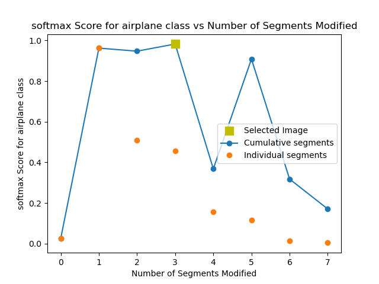
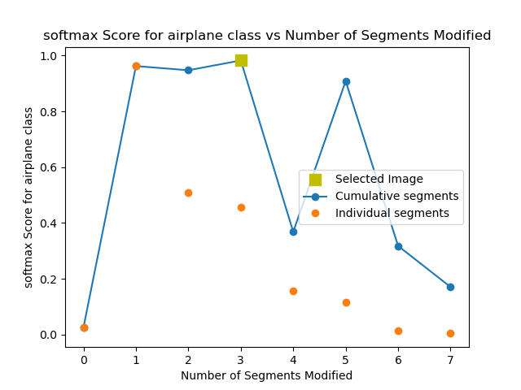
ID: airplane-train-n04308273_715/felzenszwalb_masked_softmax
Accuracy: 0.687 -> 0.584
Mean Recall: 0.687 -> 0.584
Mean Precision: 0.692 -> 0.626
Mean F1: 0.684 -> 0.575
Target Recall: 0.877 -> 0.946
Target Precision: 0.68 -> 0.282
Target F1: 0.766 -> 0.435
Orig Pred Recall: 0.743 -> 0.0
Orig Pred Precision: 0.594 -> 0.0
Orig Pred F1: 0.66 -> 0.0

ID: airplane-train-n04160586_14463/felzenszwalb_gaussian_softmax
Accuracy: 0.687 -> 0.579
Mean Recall: 0.687 -> 0.579
Mean Precision: 0.692 -> 0.733
Mean F1: 0.684 -> 0.567
Target Recall: 0.877 -> 0.952
Target Precision: 0.68 -> 0.278
Target F1: 0.766 -> 0.43
Orig Pred Recall: 0.688 -> 0.501
Orig Pred Precision: 0.78 -> 0.908
Orig Pred F1: 0.731 -> 0.646

ID: airplane-train-n04222723_5958/felzenszwalb_masked_softmax
Accuracy: 0.687 -> 0.578
Mean Recall: 0.687 -> 0.578
Mean Precision: 0.692 -> 0.614
Mean F1: 0.684 -> 0.559
Target Recall: 0.877 -> 0.982
Target Precision: 0.68 -> 0.304
Target F1: 0.766 -> 0.465
Orig Pred Recall: 0.688 -> 0.0
Orig Pred Precision: 0.78 -> 0.0
Orig Pred F1: 0.731 -> 0.0


ID: airplane-train-n02690373_2174/felzenszwalb_masked_softmax
Accuracy: 0.687 -> 0.575
Mean Recall: 0.687 -> 0.575
Mean Precision: 0.692 -> 0.62
Mean F1: 0.684 -> 0.563
Target Recall: 0.877 -> 0.962
Target Precision: 0.68 -> 0.294
Target F1: 0.766 -> 0.45
Orig Pred Recall: 0.668 -> 0.0
Orig Pred Precision: 0.722 -> 0.0
Orig Pred F1: 0.694 -> 0.0


ID: airplane-train-n03335030_18719/felzenszwalb_masked_softmax
Accuracy: 0.687 -> 0.575
Mean Recall: 0.687 -> 0.575
Mean Precision: 0.692 -> 0.633
Mean F1: 0.684 -> 0.571
Target Recall: 0.877 -> 0.955
Target Precision: 0.68 -> 0.265
Target F1: 0.766 -> 0.415
Orig Pred Recall: 0.743 -> 0.0
Orig Pred Precision: 0.594 -> 0.0
Orig Pred F1: 0.66 -> 0.0
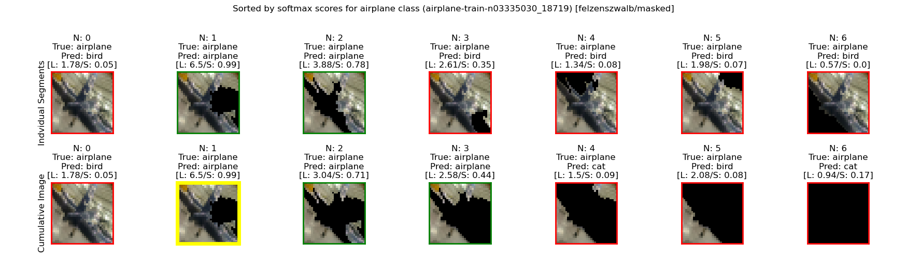ID: airplane-train-n02691156_6774/felzenszwalb_masked_softmax
Accuracy: 0.687 -> 0.574
Mean Recall: 0.687 -> 0.574
Mean Precision: 0.692 -> 0.624
Mean F1: 0.684 -> 0.557
Target Recall: 0.877 -> 0.937
Target Precision: 0.68 -> 0.322
Target F1: 0.766 -> 0.479
Orig Pred Recall: 0.769 -> 0.0
Orig Pred Precision: 0.74 -> 0.0
Orig Pred F1: 0.754 -> 0.0
 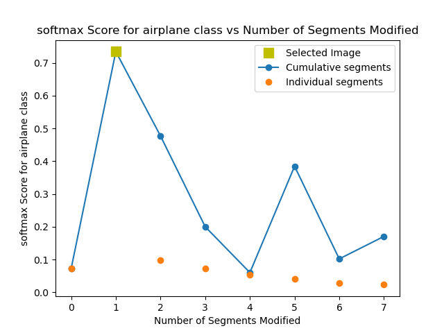
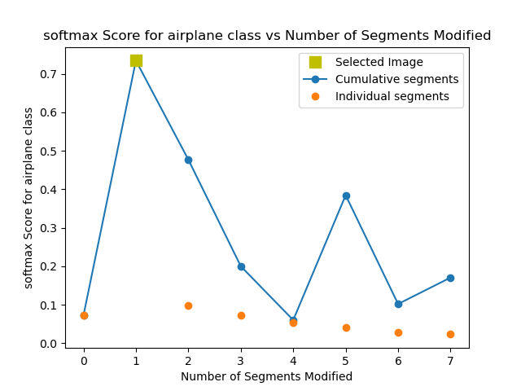

ID: airplane-train-n03595860_1626/felzenszwalb_masked_softmax
Accuracy: 0.687 -> 0.573
Mean Recall: 0.687 -> 0.573
Mean Precision: 0.692 -> 0.62
Mean F1: 0.684 -> 0.559
Target Recall: 0.877 -> 0.986
Target Precision: 0.68 -> 0.282
Target F1: 0.766 -> 0.438
Orig Pred Recall: 0.688 -> 0.0
Orig Pred Precision: 0.78 -> 0.0
Orig Pred F1: 0.731 -> 0.0


ID: airplane-train-n04308397_4250/felzenszwalb_masked_softmax
Accuracy: 0.687 -> 0.571
Mean Recall: 0.687 -> 0.571
Mean Precision: 0.692 -> 0.632
Mean F1: 0.684 -> 0.569
Target Recall: 0.877 -> 0.946
Target Precision: 0.68 -> 0.256
Target F1: 0.766 -> 0.403
Orig Pred Recall: 0.743 -> 0.0
Orig Pred Precision: 0.594 -> 0.0
Orig Pred F1: 0.66 -> 0.0


ID: airplane-train-n04160586_14609/felzenszwalb_masked_softmax
Accuracy: 0.687 -> 0.569
Mean Recall: 0.687 -> 0.569
Mean Precision: 0.692 -> 0.627
Mean F1: 0.684 -> 0.559
Target Recall: 0.877 -> 0.986
Target Precision: 0.68 -> 0.269
Target F1: 0.766 -> 0.423
Orig Pred Recall: 0.688 -> 0.0
Orig Pred Precision: 0.78 -> 0.0
Orig Pred F1: 0.731 -> 0.0
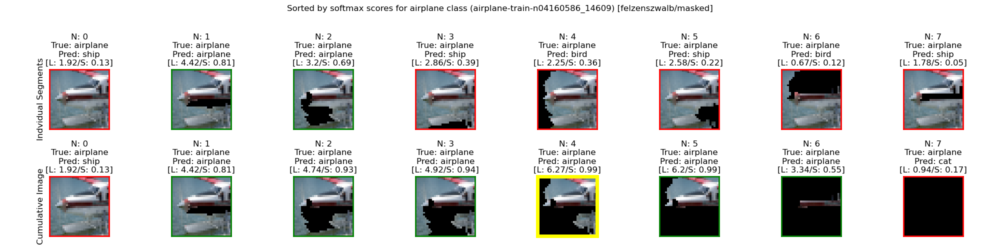
ID: airplane-train-n04160586_8239/felzenszwalb_masked_softmax
Accuracy: 0.687 -> 0.566
Mean Recall: 0.687 -> 0.566
Mean Precision: 0.692 -> 0.628
Mean F1: 0.684 -> 0.553
Target Recall: 0.877 -> 0.987
Target Precision: 0.68 -> 0.274
Target F1: 0.766 -> 0.428
Orig Pred Recall: 0.688 -> 0.0
Orig Pred Precision: 0.78 -> 0.0
Orig Pred F1: 0.731 -> 0.0


ID: airplane-train-n03595860_16451/felzenszwalb_masked_softmax
Accuracy: 0.687 -> 0.559
Mean Recall: 0.687 -> 0.559
Mean Precision: 0.692 -> 0.642
Mean F1: 0.684 -> 0.561
Target Recall: 0.877 -> 0.955
Target Precision: 0.68 -> 0.24
Target F1: 0.766 -> 0.384
Orig Pred Recall: 0.743 -> 0.0
Orig Pred Precision: 0.594 -> 0.0
Orig Pred F1: 0.66 -> 0.0
 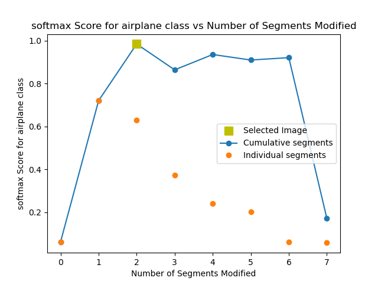
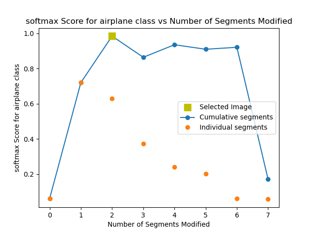

ID: airplane-train-n02704645_16592/felzenszwalb_masked_softmax
Accuracy: 0.687 -> 0.557
Mean Recall: 0.687 -> 0.557
Mean Precision: 0.692 -> 0.638
Mean F1: 0.684 -> 0.56
Target Recall: 0.877 -> 0.951
Target Precision: 0.68 -> 0.242
Target F1: 0.766 -> 0.386
Orig Pred Recall: 0.743 -> 0.0
Orig Pred Precision: 0.594 -> 0.0
Orig Pred F1: 0.66 -> 0.0

ID: airplane-train-n03604311_3840/felzenszwalb_masked_softmax
Accuracy: 0.687 -> 0.536
Mean Recall: 0.687 -> 0.536
Mean Precision: 0.692 -> 0.531
Mean F1: 0.684 -> 0.501
Target Recall: 0.877 -> 0.986
Target Precision: 0.68 -> 0.255
Target F1: 0.766 -> 0.405
Orig Pred Recall: 0.688 -> 0.0
Orig Pred Precision: 0.78 -> 0.0
Orig Pred F1: 0.731 -> 0.0


ID: airplane-train-n03604311_5165/felzenszwalb_masked_softmax
Accuracy: 0.687 -> 0.534
Mean Recall: 0.687 -> 0.534
Mean Precision: 0.692 -> 0.622
Mean F1: 0.684 -> 0.499
Target Recall: 0.877 -> 0.981
Target Precision: 0.68 -> 0.264
Target F1: 0.766 -> 0.416
Orig Pred Recall: 0.688 -> 0.0
Orig Pred Precision: 0.78 -> 0.0
Orig Pred F1: 0.731 -> 0.0
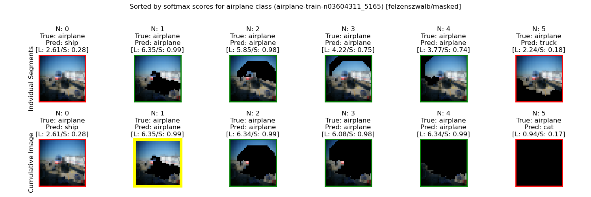

ID: airplane-train-n03604311_4322/felzenszwalb_masked_softmax
Accuracy: 0.687 -> 0.534
Mean Recall: 0.687 -> 0.534
Mean Precision: 0.692 -> 0.633
Mean F1: 0.684 -> 0.503
Target Recall: 0.877 -> 0.985
Target Precision: 0.68 -> 0.25
Target F1: 0.766 -> 0.399
Orig Pred Recall: 0.743 -> 0.0
Orig Pred Precision: 0.594 -> 0.0
Orig Pred F1: 0.66 -> 0.0


ID: airplane-train-n03365231_5265/felzenszwalb_masked_softmax
Accuracy: 0.687 -> 0.533
Mean Recall: 0.687 -> 0.533
Mean Precision: 0.692 -> 0.625
Mean F1: 0.684 -> 0.523
Target Recall: 0.877 -> 0.93
Target Precision: 0.68 -> 0.245
Target F1: 0.766 -> 0.388
Orig Pred Recall: 0.668 -> 0.0
Orig Pred Precision: 0.722 -> 0.0
Orig Pred F1: 0.694 -> 0.0


ID: airplane-train-n02867715_13800/felzenszwalb_masked_softmax
Accuracy: 0.687 -> 0.533
Mean Recall: 0.687 -> 0.533
Mean Precision: 0.692 -> 0.647
Mean F1: 0.684 -> 0.543
Target Recall: 0.877 -> 0.962
Target Precision: 0.68 -> 0.224
Target F1: 0.766 -> 0.364
Orig Pred Recall: 0.769 -> 0.0
Orig Pred Precision: 0.74 -> 0.0
Orig Pred F1: 0.754 -> 0.0


ID: airplane-train-n02842573_1888/felzenszwalb_masked_softmax
Accuracy: 0.687 -> 0.529
Mean Recall: 0.687 -> 0.529
Mean Precision: 0.692 -> 0.577
Mean F1: 0.684 -> 0.498
Target Recall: 0.877 -> 0.98
Target Precision: 0.68 -> 0.236
Target F1: 0.766 -> 0.381
Orig Pred Recall: 0.688 -> 0.0
Orig Pred Precision: 0.78 -> 0.0
Orig Pred F1: 0.731 -> 0.0

ID: airplane-train-n03577672_19103/felzenszwalb_masked_softmax
Accuracy: 0.687 -> 0.52
Mean Recall: 0.687 -> 0.52
Mean Precision: 0.692 -> 0.531
Mean F1: 0.684 -> 0.487
Target Recall: 0.877 -> 0.978
Target Precision: 0.68 -> 0.252
Target F1: 0.766 -> 0.401
Orig Pred Recall: 0.688 -> 0.0
Orig Pred Precision: 0.78 -> 0.0
Orig Pred F1: 0.731 -> 0.0


ID: airplane-train-n03335030_28782/felzenszwalb_masked_softmax
Accuracy: 0.687 -> 0.514
Mean Recall: 0.687 -> 0.514
Mean Precision: 0.692 -> 0.557
Mean F1: 0.684 -> 0.496
Target Recall: 0.877 -> 0.983
Target Precision: 0.68 -> 0.221
Target F1: 0.766 -> 0.362
Orig Pred Recall: 0.688 -> 0.0
Orig Pred Precision: 0.78 -> 0.0
Orig Pred F1: 0.731 -> 0.0


ID: airplane-train-n04012084_1354/felzenszwalb_masked_softmax
Accuracy: 0.687 -> 0.506
Mean Recall: 0.687 -> 0.506
Mean Precision: 0.692 -> 0.543
Mean F1: 0.684 -> 0.485
Target Recall: 0.877 -> 0.985
Target Precision: 0.68 -> 0.22
Target F1: 0.766 -> 0.36
Orig Pred Recall: 0.688 -> 0.0
Orig Pred Precision: 0.78 -> 0.0
Orig Pred F1: 0.731 -> 0.0
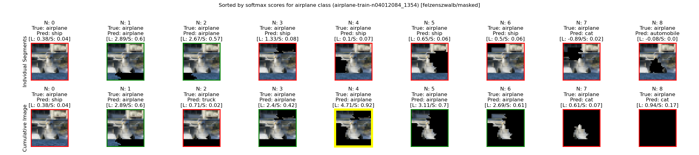 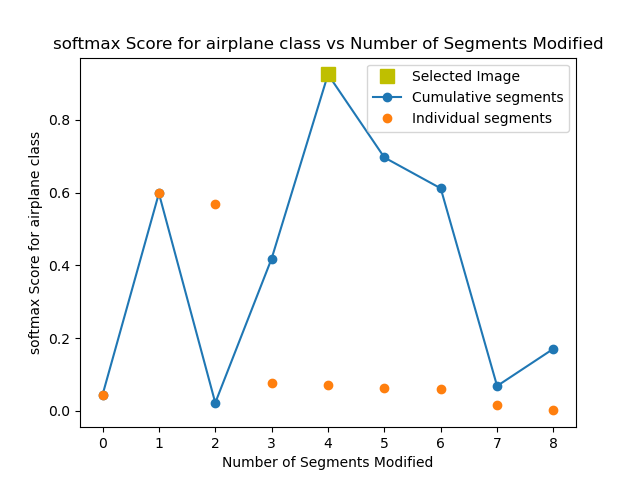
ID: airplane-train-n02842573_9637/felzenszwalb_masked_softmax
Accuracy: 0.687 -> 0.5
Mean Recall: 0.687 -> 0.5
Mean Precision: 0.692 -> 0.671
Mean F1: 0.684 -> 0.491
Target Recall: 0.877 -> 0.991
Target Precision: 0.68 -> 0.203
Target F1: 0.766 -> 0.337
Orig Pred Recall: 0.688 -> 0.0
Orig Pred Precision: 0.78 -> 0.0
Orig Pred F1: 0.731 -> 0.0
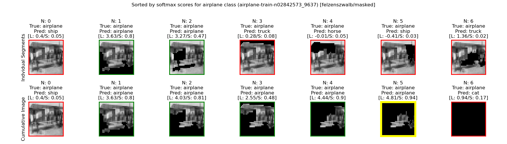
ID: airplane-train-n03335030_13864/felzenszwalb_masked_softmax
Accuracy: 0.687 -> 0.477
Mean Recall: 0.687 -> 0.477
Mean Precision: 0.692 -> 0.548
Mean F1: 0.684 -> 0.467
Target Recall: 0.877 -> 0.989
Target Precision: 0.68 -> 0.201
Target F1: 0.766 -> 0.334
Orig Pred Recall: 0.688 -> 0.0
Orig Pred Precision: 0.78 -> 0.0
Orig Pred F1: 0.731 -> 0.0


ID: airplane-train-n02690373_1167/felzenszwalb_masked_softmax
Accuracy: 0.687 -> 0.425
Mean Recall: 0.687 -> 0.425
Mean Precision: 0.692 -> 0.538
Mean F1: 0.684 -> 0.408
Target Recall: 0.877 -> 0.974
Target Precision: 0.68 -> 0.172
Target F1: 0.766 -> 0.293
Orig Pred Recall: 0.668 -> 0.0
Orig Pred Precision: 0.722 -> 0.0
Orig Pred F1: 0.694 -> 0.0
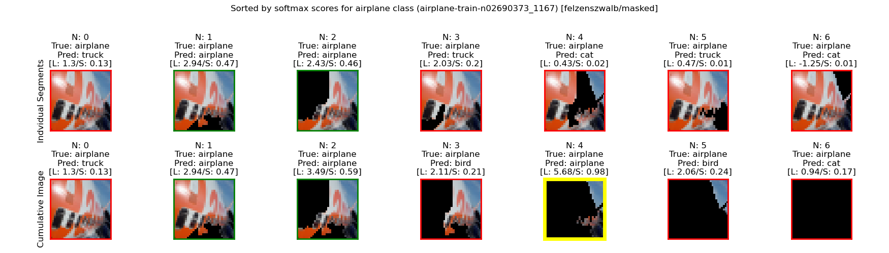

ID: airplane-train-n02867715_13526/felzenszwalb_masked_softmax
Accuracy: 0.687 -> 0.389
Mean Recall: 0.687 -> 0.389
Mean Precision: 0.692 -> 0.461
Mean F1: 0.684 -> 0.365
Target Recall: 0.877 -> 0.989
Target Precision: 0.68 -> 0.163
Target F1: 0.766 -> 0.279
Orig Pred Recall: 0.668 -> 0.0
Orig Pred Precision: 0.722 -> 0.0
Orig Pred F1: 0.694 -> 0.0

ID: airplane-train-n04160586_14463/felzenszwalb_masked_softmax
Accuracy: 0.687 -> 0.383
Mean Recall: 0.687 -> 0.383
Mean Precision: 0.692 -> 0.632
Mean F1: 0.684 -> 0.377
Target Recall: 0.877 -> 0.995
Target Precision: 0.68 -> 0.147
Target F1: 0.766 -> 0.256
Orig Pred Recall: 0.688 -> 0.0
Orig Pred Precision: 0.78 -> 0.0
Orig Pred F1: 0.731 -> 0.0


ID: airplane-train-n03595860_3751/felzenszwalb_masked_softmax
Accuracy: 0.687 -> 0.299
Mean Recall: 0.687 -> 0.299
Mean Precision: 0.692 -> 0.349
Mean F1: 0.684 -> 0.269
Target Recall: 0.877 -> 0.994
Target Precision: 0.68 -> 0.131
Target F1: 0.766 -> 0.231
Orig Pred Recall: 0.668 -> 0.0
Orig Pred Precision: 0.722 -> 0.0
Orig Pred F1: 0.694 -> 0.0
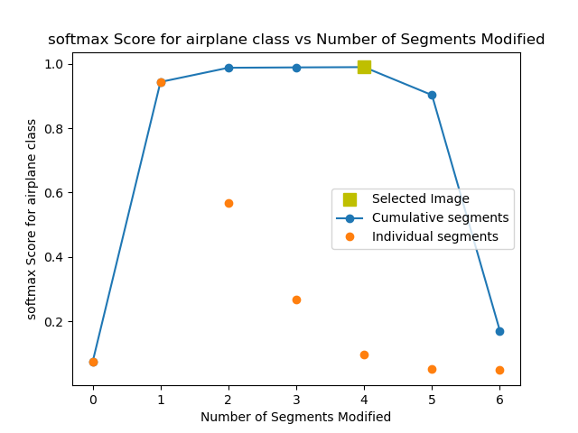 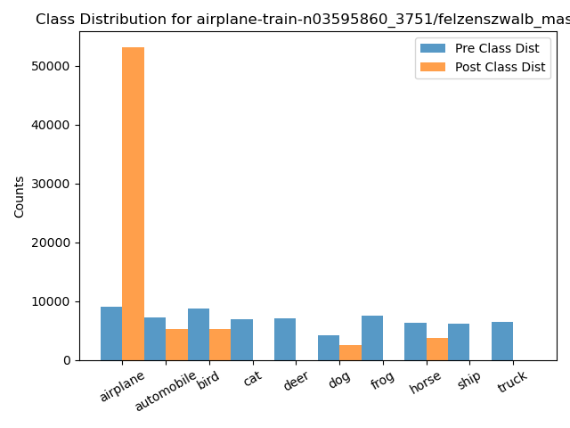